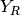
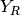

mir_eval Documentation¶
mir_eval is a Python library which provides a transparent, standaridized, and straightforward way to evaluate Music Information Retrieval systems.
It can be used in any of the following ways:
- By importing it and calling it from your Python code (see Installing mir_eval and Quickstart: Using mir_eval in Python code)
- Via the included evaluator Python scripts (see Installing mir_eval and Quickstart: Using the evaluators)
If you use mir_eval in a research project, please cite the following paper:
- Raffel, B. McFee, E. J. Humphrey, J. Salamon, O. Nieto, D. Liang, and D. P. W. Ellis, “mir_eval: A Transparent Implementation of Common MIR Metrics”, Proceedings of the 15th International Conference on Music Information Retrieval, 2014.
Installing mir_eval¶
The simplest way to install mir_eval is by using pip, which will also install the required dependencies if needed.
To install mir_eval using pip, simply run
pip install mir_eval
Alternatively, you can install mir_eval from source by first installing the dependencies and then running
python setup.py install
from the source directory.
If you don’t use Python and want to get started as quickly as possible, you might consider using Anaconda which makes it easy to install a Python environment which can run mir_eval.
Quickstart: Using the evaluators¶
The fastest way to get up and running with mir_eval is to use the evaluators.
These are scripts which can be run from the command line and utilize mir_eval to compute metrics according to reference and estimated annotations you provide.
To use the evaluators, you must first install mir_eval and its dependencies (see Installing mir_eval).
The evaluator Python scripts can be found in the mir_eval github repository in the evaluators folder:
http://github.com/craffel/mir_eval/tree/master/evaluators
One evaluator is included for each of the MIR tasks implemented in mir_eval.
By way of example, we’ll cover the usage of the beat detection evaluator beat_eval.
To use an evaluator for a different task, simply replace beat_eval in the following with the name of the evaluator for the task you’re interested in.
To get usage help, simply run
./beat_eval.py --help
As an example, to evaluate generated beat times stored in the file estimated_beats.txt against ground-truth beats stored in the file reference_beats.txt and store the resulting scores in results.json, simply run
./beat_eval.py -o results.json reference_beats.txt estimated_beats.txt
The file results.json will now contain the achieved scores in machine-parsable, human-readable json format. Nice!
Quickstart: Using mir_eval in Python code¶
Once you’ve installed mir_eval (see Installing mir_eval), you can import it in your Python code as follows:
import mir_eval
From here, you will typically either load in data and call the evaluate() function from the appropriate submodule like so:
reference_beats = mir_eval.io.load_events('reference_beats.txt')
estimated_beats = mir_eval.io.load_events('estimated_beats.txt')
# Scores will be a dict containing scores for all of the metrics
# implemented in mir_eval.beat. The keys are metric names
# and values are the scores achieved
scores = mir_eval.beat.evaluate(reference_beats, estimated_beats)
or you’ll load in the data, do some preprocessing, and call specific metric functions from the appropriate submodule like so:
reference_beats = mir_eval.io.load_events('reference_beats.txt')
estimated_beats = mir_eval.io.load_events('estimated_beats.txt')
# Crop out beats before 5s, a common preprocessing step
reference_beats = mir_eval.beat.trim_beats(reference_beats)
estimated_beats = mir_eval.beat.trim_beats(estimated_beats)
# Compute the F-measure metric and store it in f_measure
f_measure = mir_eval.beat.f_measure(reference_beats, estimated_beats)
The documentation for each metric function, found in the mir_eval section below, contains further usage information.
mir_eval¶
The structure of the mir_eval Python module is as follows:
Each MIR task for which evaluation metrics are included in mir_eval is given its own submodule, and each metric is defined as a separate function in each submodule.
Every metric function includes detailed documentation, example usage, input validation, and references to the original paper which defined the metric (see the subsections below).
The task submodules also all contain a function evaluate(), which takes as input reference and estimated annotations and returns a dictionary of scores for all of the metrics implemented (for casual users, this is the place to start).
Finally, each task submodule also includes functions for common data pre-processing steps.
mir_eval also includes the following additional submodules:
iowhich contains convenience functions for loading in task-specific data from common file formatsutilwhich includes miscellaneous functionality shared across the submodulessonifywhich implements some simple methods for synthesizing annotations of various formats for “evaluation by ear”.
The following subsections document each submodule.
mir_eval.beat¶
The aim of a beat detection algorithm is to report the times at which a typical human listener might tap their foot to a piece of music. As a result, most metrics for evaluating the performance of beat tracking systems involve computing the error between the estimated beat times and some reference list of beat locations. Many metrics additionally compare the beat sequences at different metric levels in order to deal with the ambiguity of tempo.
- Based on the methods described in:
- Matthew E. P. Davies, Norberto Degara, and Mark D. Plumbley. “Evaluation Methods for Musical Audio Beat Tracking Algorithms”, Queen Mary University of London Technical Report C4DM-TR-09-06 London, United Kingdom, 8 October 2009.
- See also the Beat Evaluation Toolbox:
- https://code.soundsoftware.ac.uk/projects/beat-evaluation/
Conventions¶
Beat times should be provided in the form of a 1-dimensional array of beat
times in seconds in increasing order. Typically, any beats which occur before
5s are ignored; this can be accomplished using
mir_eval.beat.trim_beats().
Metrics¶
mir_eval.beat.f_measure(): The F-measure of the beat sequence, where an estimated beat is considered correct if it is sufficiently close to a reference beatmir_eval.beat.cemgil(): Cemgil’s score, which computes the sum of Gaussian errors for each beatmir_eval.beat.goto(): Goto’s score, a binary score which is 1 when at least 25% of the estimated beat sequence closely matches the reference beat sequencemir_eval.beat.p_score(): McKinney’s P-score, which computes the cross-correlation of the estimated and reference beat sequences represented as impulse trainsmir_eval.beat.continuity(): Continuity-based scores which compute the proportion of the beat sequence which is continuously correctmir_eval.beat.information_gain(): The Information Gain of a normalized beat error histogram over a uniform distribution
-
mir_eval.beat.trim_beats(beats, min_beat_time=5.0)¶ Removes beats before min_beat_time. A common preprocessing step.
Parameters: beats : np.ndarray
Array of beat times in seconds.
min_beat_time : float
Minimum beat time to allow (Default value = 5.)
Returns: beats_trimmed : np.ndarray
Trimmed beat array.
-
mir_eval.beat.validate(reference_beats, estimated_beats)¶ Checks that the input annotations to a metric look like valid beat time arrays, and throws helpful errors if not.
Parameters: reference_beats : np.ndarray
reference beat times, in seconds
estimated_beats : np.ndarray
estimated beat times, in seconds
-
mir_eval.beat.f_measure(reference_beats, estimated_beats, f_measure_threshold=0.07)¶ Compute the F-measure of correct vs incorrectly predicted beats. “Correctness” is determined over a small window.
Parameters: reference_beats : np.ndarray
reference beat times, in seconds
estimated_beats : np.ndarray
estimated beat times, in seconds
f_measure_threshold : float
Window size, in seconds (Default value = 0.07)
Returns: f_score : float
The computed F-measure score
Examples
>>> reference_beats = mir_eval.io.load_events('reference.txt') >>> reference_beats = mir_eval.beat.trim_beats(reference_beats) >>> estimated_beats = mir_eval.io.load_events('estimated.txt') >>> estimated_beats = mir_eval.beat.trim_beats(estimated_beats) >>> f_measure = mir_eval.beat.f_measure(reference_beats, estimated_beats)
-
mir_eval.beat.cemgil(reference_beats, estimated_beats, cemgil_sigma=0.04)¶ Cemgil’s score, computes a gaussian error of each estimated beat. Compares against the original beat times and all metrical variations.
Parameters: reference_beats : np.ndarray
reference beat times, in seconds
estimated_beats : np.ndarray
query beat times, in seconds
cemgil_sigma : float
Sigma parameter of gaussian error windows (Default value = 0.04)
Returns: cemgil_score : float
Cemgil’s score for the original reference beats
cemgil_max : float
The best Cemgil score for all metrical variations
Examples
>>> reference_beats = mir_eval.io.load_events('reference.txt') >>> reference_beats = mir_eval.beat.trim_beats(reference_beats) >>> estimated_beats = mir_eval.io.load_events('estimated.txt') >>> estimated_beats = mir_eval.beat.trim_beats(estimated_beats) >>> cemgil_score, cemgil_max = mir_eval.beat.cemgil(reference_beats, estimated_beats)
-
mir_eval.beat.goto(reference_beats, estimated_beats, goto_threshold=0.35, goto_mu=0.2, goto_sigma=0.2)¶ Calculate Goto’s score, a binary 1 or 0 depending on some specific heuristic criteria
Parameters: reference_beats : np.ndarray
reference beat times, in seconds
estimated_beats : np.ndarray
query beat times, in seconds
goto_threshold : float
Threshold of beat error for a beat to be “correct” (Default value = 0.35)
goto_mu : float
The mean of the beat errors in the continuously correct track must be less than this (Default value = 0.2)
goto_sigma : float
The std of the beat errors in the continuously correct track must be less than this (Default value = 0.2)
Returns: goto_score : float
Either 1.0 or 0.0 if some specific criteria are met
Examples
>>> reference_beats = mir_eval.io.load_events('reference.txt') >>> reference_beats = mir_eval.beat.trim_beats(reference_beats) >>> estimated_beats = mir_eval.io.load_events('estimated.txt') >>> estimated_beats = mir_eval.beat.trim_beats(estimated_beats) >>> goto_score = mir_eval.beat.goto(reference_beats, estimated_beats)
-
mir_eval.beat.p_score(reference_beats, estimated_beats, p_score_threshold=0.2)¶ Get McKinney’s P-score. Based on the autocorrelation of the reference and estimated beats
Parameters: reference_beats : np.ndarray
reference beat times, in seconds
estimated_beats : np.ndarray
query beat times, in seconds
p_score_threshold : float
Window size will be
p_score_threshold*np.median(inter_annotation_intervals), (Default value = 0.2)Returns: correlation : float
McKinney’s P-score
Examples
>>> reference_beats = mir_eval.io.load_events('reference.txt') >>> reference_beats = mir_eval.beat.trim_beats(reference_beats) >>> estimated_beats = mir_eval.io.load_events('estimated.txt') >>> estimated_beats = mir_eval.beat.trim_beats(estimated_beats) >>> p_score = mir_eval.beat.p_score(reference_beats, estimated_beats)
-
mir_eval.beat.continuity(reference_beats, estimated_beats, continuity_phase_threshold=0.175, continuity_period_threshold=0.175)¶ Get metrics based on how much of the estimated beat sequence is continually correct.
Parameters: reference_beats : np.ndarray
reference beat times, in seconds
estimated_beats : np.ndarray
query beat times, in seconds
continuity_phase_threshold : float
Allowable ratio of how far is the estimated beat can be from the reference beat (Default value = 0.175)
continuity_period_threshold : float
Allowable distance between the inter-beat-interval and the inter-annotation-interval (Default value = 0.175)
Returns: CMLc : float
Correct metric level, continuous accuracy
CMLt : float
Correct metric level, total accuracy (continuity not required)
AMLc : float
Any metric level, continuous accuracy
AMLt : float
Any metric level, total accuracy (continuity not required)
Examples
>>> reference_beats = mir_eval.io.load_events('reference.txt') >>> reference_beats = mir_eval.beat.trim_beats(reference_beats) >>> estimated_beats = mir_eval.io.load_events('estimated.txt') >>> estimated_beats = mir_eval.beat.trim_beats(estimated_beats) >>> CMLc, CMLt, AMLc, AMLt = mir_eval.beat.continuity(reference_beats, estimated_beats)
-
mir_eval.beat.information_gain(reference_beats, estimated_beats, bins=41)¶ Get the information gain - K-L divergence of the beat error histogram to a uniform histogram
Parameters: reference_beats : np.ndarray
reference beat times, in seconds
estimated_beats : np.ndarray
query beat times, in seconds
bins : int
Number of bins in the beat error histogram (Default value = 41)
Returns: information_gain_score : float
Entropy of beat error histogram
Examples
>>> reference_beats = mir_eval.io.load_events('reference.txt') >>> reference_beats = mir_eval.beat.trim_beats(reference_beats) >>> estimated_beats = mir_eval.io.load_events('estimated.txt') >>> estimated_beats = mir_eval.beat.trim_beats(estimated_beats) >>> information_gain = mir_eval.beat.information_gain(reference_beats, estimated_beats)
-
mir_eval.beat.evaluate(reference_beats, estimated_beats, **kwargs)¶ Compute all metrics for the given reference and estimated annotations.
Parameters: reference_beats : np.ndarray
Reference beat times, in seconds
estimated_beats : np.ndarray
Query beat times, in seconds
kwargs
Additional keyword arguments which will be passed to the appropriate metric or preprocessing functions.
Returns: scores : dict
Dictionary of scores, where the key is the metric name (str) and the value is the (float) score achieved.
Examples
>>> reference_beats = mir_eval.io.load_events('reference.txt') >>> estimated_beats = mir_eval.io.load_events('estimated.txt') >>> scores = mir_eval.beat.evaluate(reference_beats, estimated_beats)
mir_eval.chord¶
Chord estimation algorithms produce a list of intervals and labels which denote the chord being played over each timespan. They are evaluated by comparing the estimated chord labels to some reference, usually using a mapping to a chord subalphabet (e.g. minor and major chords only, all triads, etc.). There is no single ‘right’ way to compare two sequences of chord labels. Embracing this reality, every conventional comparison rule is provided. Comparisons are made over the different components of each chord (e.g. G:maj(6)/5): the root (G), the root-invariant active semitones as determined by the quality shorthand (maj) and scale degrees (6), and the bass interval (5). This submodule provides functions both for comparing a sequences of chord labels according to some chord subalphabet mapping and for using these comparisons to score a sequence of estimated chords against a reference.
Conventions¶
A sequence of chord labels is represented as a list of strings, where each label is the chord name based on the syntax of [1]. Reference and estimated chord label sequences should be of the same length for comparison functions. When converting the chord string into its constituent parts,
- Pitch class counting starts at C, e.g. C:0, D:2, E:4, F:5, etc.
- Scale degree is represented as a string of the diatonic interval, relative to the root note, e.g. ‘b6’, ‘#5’, or ‘7’
- Bass intervals are represented as strings
- Chord bitmaps are positional binary vectors indicating active pitch classes and may be absolute or relative depending on context in the code.
If no chord is present at a given point in time, it should have the label ‘N’,
which is defined in the variable mir_eval.chord.NO_CHORD.
Metrics¶
mir_eval.chord.root(): Only compares the root of the chords.mir_eval.chord.majmin(): Only compares major, minor, and “no chord” labels.mir_eval.chord.majmin_inv(): Compares major/minor chords, with inversions. The bass note must exist in the triad.mir_eval.chord.mirex(): A estimated chord is considered correct if it shares at least three pitch classes in common.mir_eval.chord.thirds(): Chords are compared at the level of major or minor thirds (root and third), For example, both (‘A:7’, ‘A:maj’) and (‘A:min’, ‘A:dim’) are equivalent, as the third is major and minor in quality, respectively.mir_eval.chord.thirds_inv(): Same as above, with inversions (bass relationships).mir_eval.chord.triads(): Chords are considered at the level of triads (major, minor, augmented, diminished, suspended), meaning that, in addition to the root, the quality is only considered through #5th scale degree (for augmented chords). For example, (‘A:7’, ‘A:maj’) are equivalent, while (‘A:min’, ‘A:dim’) and (‘A:aug’, ‘A:maj’) are not.mir_eval.chord.triads_inv(): Same as above, with inversions (bass relationships).mir_eval.chord.tetrads(): Chords are considered at the level of the entire quality in closed voicing, i.e. spanning only a single octave; extended chords (9’s, 11’s and 13’s) are rolled into a single octave with any upper voices included as extensions. For example, (‘A:7’, ‘A:9’) are equivlent but (‘A:7’, ‘A:maj7’) are not.mir_eval.chord.tetrads_inv(): Same as above, with inversions (bass relationships).mir_eval.chord.sevenths(): Compares according to MIREX “sevenths” rules; that is, only major, major seventh, seventh, minor, minor seventh and no chord labels are compared.mir_eval.chord.sevenths_inv(): Same as above, with inversions (bass relationships).
| references: |
|
|---|
-
exception
mir_eval.chord.InvalidChordException(message='', chord_label=None)¶ Bases:
exceptions.ExceptionException class for suspect / invalid chord labels
-
mir_eval.chord.pitch_class_to_semitone(pitch_class)¶ Convert a pitch class to semitone.
Parameters: pitch_class : str
Spelling of a given pitch class, e.g. ‘C#’, ‘Gbb’
Returns: semitone : int
Semitone value of the pitch class.
-
mir_eval.chord.scale_degree_to_semitone(scale_degree)¶ Convert a scale degree to semitone.
Parameters: scale degree : str
Spelling of a relative scale degree, e.g. ‘b3’, ‘7’, ‘#5’
Returns: semitone : int
Relative semitone of the scale degree, wrapped to a single octave
-
mir_eval.chord.scale_degree_to_bitmap(scale_degree)¶ Create a bitmap representation of a scale degree.
Note that values in the bitmap may be negative, indicating that the semitone is to be removed.
Parameters: scale_degree : str
Spelling of a relative scale degree, e.g. ‘b3’, ‘7’, ‘#5’
Returns: bitmap : np.ndarray, in [-1, 0, 1]
Bitmap representation of this scale degree (12-dim).
-
mir_eval.chord.quality_to_bitmap(quality)¶ Return the bitmap for a given quality.
Parameters: quality : str
Chord quality name.
Returns: bitmap : np.ndarray
Bitmap representation of this quality (12-dim).
-
mir_eval.chord.reduce_extended_quality(quality)¶ Map an extended chord quality to a simpler one, moving upper voices to a set of scale degree extensions.
Parameters: quality : str
Extended chord quality to reduce.
Returns: base_quality : str
New chord quality.
extensions : set
Scale degrees extensions for the quality.
-
mir_eval.chord.validate_chord_label(chord_label)¶ Test for well-formedness of a chord label.
Parameters: chord : str
Chord label to validate.
-
mir_eval.chord.split(chord_label, reduce_extended_chords=False)¶ - Parse a chord label into its four constituent parts:
- root
- quality shorthand
- scale degrees
- bass
- Note: Chords lacking quality AND interval information are major.
- If a quality is specified, it is returned.
- If an interval is specified WITHOUT a quality, the quality field is empty.
Some examples:
'C' -> ['C', 'maj', {}, '1'] 'G#:min(*b3,*5)/5' -> ['G#', 'min', {'*b3', '*5'}, '5'] 'A:(3)/6' -> ['A', '', {'3'}, '6']Parameters: chord_label : str
A chord label.
reduce_extended_chords : bool
Whether to map the upper voicings of extended chords (9’s, 11’s, 13’s) to semitone extensions. (Default value = False)
Returns: chord_parts : list
Split version of the chord label.
-
mir_eval.chord.join(chord_root, quality='', extensions=None, bass='')¶ Join the parts of a chord into a complete chord label.
Parameters: chord_root : str
Root pitch class of the chord, e.g. ‘C’, ‘Eb’
quality : str
Quality of the chord, e.g. ‘maj’, ‘hdim7’ (Default value = ‘’)
extensions : list
Any added or absent scaled degrees for this chord, e.g. [‘4’, ‘*3’] (Default value = None)
bass : str
Scale degree of the bass note, e.g. ‘5’. (Default value = ‘’)
Returns: chord_label : str
A complete chord label.
-
mir_eval.chord.encode(chord_label, reduce_extended_chords=False, strict_bass_intervals=False)¶ Translate a chord label to numerical representations for evaluation.
Parameters: chord_label : str
Chord label to encode.
reduce_extended_chords : bool
Whether to map the upper voicings of extended chords (9’s, 11’s, 13’s) to semitone extensions. (Default value = False)
strict_bass_intervals : bool
Whether to require that the bass scale degree is present in the chord. (Default value = False)
Returns: root_number : int
Absolute semitone of the chord’s root.
semitone_bitmap : np.ndarray, dtype=int
12-dim vector of relative semitones in the chord spelling.
bass_number : int
Relative semitone of the chord’s bass note, e.g. 0=root, 7=fifth, etc.
-
mir_eval.chord.encode_many(chord_labels, reduce_extended_chords=False)¶ Translate a set of chord labels to numerical representations for sane evaluation.
Parameters: chord_labels : list
Set of chord labels to encode.
reduce_extended_chords : bool
Whether to map the upper voicings of extended chords (9’s, 11’s, 13’s) to semitone extensions. (Default value = False)
Returns: root_number : np.ndarray, dtype=int
Absolute semitone of the chord’s root.
interval_bitmap : np.ndarray, dtype=int
12-dim vector of relative semitones in the given chord quality.
bass_number : np.ndarray, dtype=int
Relative semitones of the chord’s bass notes.
-
mir_eval.chord.rotate_bitmap_to_root(bitmap, chord_root)¶ Circularly shift a relative bitmap to its asbolute pitch classes.
For clarity, the best explanation is an example. Given ‘G:Maj’, the root and quality map are as follows:
root=5 quality=[1, 0, 0, 0, 1, 0, 0, 1, 0, 0, 0, 0] # Relative chord shape
After rotating to the root, the resulting bitmap becomes:
abs_quality = [0, 0, 1, 0, 0, 0, 0, 1, 0, 0, 0, 1] # G, B, and D
Parameters: bitmap : np.ndarray, shape=(12,)
Bitmap of active notes, relative to the given root.
chord_root : int
Absolute pitch class number.
Returns: bitmap : np.ndarray, shape=(12,)
Absolute bitmap of active pitch classes.
-
mir_eval.chord.rotate_bitmaps_to_roots(bitmaps, roots)¶ Circularly shift a relative bitmaps to asbolute pitch classes.
See rotate_bitmap_to_root for more information.
Parameters: bitmap : np.ndarray, shape=(N, 12)
Bitmap of active notes, relative to the given root.
root : np.ndarray, shape=(N,)
Absolute pitch class number.
Returns: bitmap : np.ndarray, shape=(N, 12)
Absolute bitmaps of active pitch classes.
-
mir_eval.chord.validate(reference_labels, estimated_labels)¶ Checks that the input annotations to a comparison function look like valid chord labels.
Parameters: reference_labels : list, len=n
Reference chord labels to score against.
estimated_labels : list, len=n
Estimated chord labels to score against.
-
mir_eval.chord.weighted_accuracy(comparisons, weights)¶ Compute the weighted accuracy of a list of chord comparisons.
Parameters: comparisons : np.ndarray
List of chord comparison scores, in [0, 1] or -1
weights : np.ndarray
Weights (not necessarily normalized) for each comparison. This can be a list of interval durations
Returns: score : float
Weighted accuracy
Examples
>>> (ref_intervals, ... ref_labels) = mir_eval.io.load_labeled_intervals('ref.lab') >>> (est_intervals, ... est_labels) = mir_eval.io.load_labeled_intervals('est.lab') >>> est_intervals, est_labels = mir_eval.util.adjust_intervals( ... est_intervals, est_labels, ref_intervals.min(), ... ref_intervals.max(), mir_eval.chord.NO_CHORD, ... mir_eval.chord.NO_CHORD) >>> (intervals, ... ref_labels, ... est_labels) = mir_eval.util.merge_labeled_intervals( ... ref_intervals, ref_labels, est_intervals, est_labels) >>> durations = mir_eval.util.intervals_to_durations(intervals) >>> # Here, we're using the "thirds" function to compare labels >>> # but any of the comparison functions would work. >>> comparisons = mir_eval.chord.thirds(ref_labels, est_labels) >>> score = mir_eval.chord.weighted_accuracy(comparisons, durations)
-
mir_eval.chord.thirds(reference_labels, estimated_labels)¶ Compare chords along root & third relationships.
Parameters: reference_labels : list, len=n
Reference chord labels to score against.
estimated_labels : list, len=n
Estimated chord labels to score against.
Returns: comparison_scores : np.ndarray, shape=(n,), dtype=float
Comparison scores, in [0.0, 1.0]
Examples
>>> (ref_intervals, ... ref_labels) = mir_eval.io.load_labeled_intervals('ref.lab') >>> (est_intervals, ... est_labels) = mir_eval.io.load_labeled_intervals('est.lab') >>> est_intervals, est_labels = mir_eval.util.adjust_intervals( ... est_intervals, est_labels, ref_intervals.min(), ... ref_intervals.max(), mir_eval.chord.NO_CHORD, ... mir_eval.chord.NO_CHORD) >>> (intervals, ... ref_labels, ... est_labels) = mir_eval.util.merge_labeled_intervals( ... ref_intervals, ref_labels, est_intervals, est_labels) >>> durations = mir_eval.util.intervals_to_durations(intervals) >>> comparisons = mir_eval.chord.thirds(ref_labels, est_labels) >>> score = mir_eval.chord.weighted_accuracy(comparisons, durations)
-
mir_eval.chord.thirds_inv(reference_labels, estimated_labels)¶ Score chords along root, third, & bass relationships.
Parameters: reference_labels : list, len=n
Reference chord labels to score against.
estimated_labels : list, len=n
Estimated chord labels to score against.
Returns: scores : np.ndarray, shape=(n,), dtype=float
Comparison scores, in [0.0, 1.0]
Examples
>>> (ref_intervals, ... ref_labels) = mir_eval.io.load_labeled_intervals('ref.lab') >>> (est_intervals, ... est_labels) = mir_eval.io.load_labeled_intervals('est.lab') >>> est_intervals, est_labels = mir_eval.util.adjust_intervals( ... est_intervals, est_labels, ref_intervals.min(), ... ref_intervals.max(), mir_eval.chord.NO_CHORD, ... mir_eval.chord.NO_CHORD) >>> (intervals, ... ref_labels, ... est_labels) = mir_eval.util.merge_labeled_intervals( ... ref_intervals, ref_labels, est_intervals, est_labels) >>> durations = mir_eval.util.intervals_to_durations(intervals) >>> comparisons = mir_eval.chord.thirds_inv(ref_labels, est_labels) >>> score = mir_eval.chord.weighted_accuracy(comparisons, durations)
-
mir_eval.chord.triads(reference_labels, estimated_labels)¶ Compare chords along triad (root & quality to #5) relationships.
Parameters: reference_labels : list, len=n
Reference chord labels to score against.
estimated_labels : list, len=n
Estimated chord labels to score against.
Returns: comparison_scores : np.ndarray, shape=(n,), dtype=float
Comparison scores, in [0.0, 1.0]
Examples
>>> (ref_intervals, ... ref_labels) = mir_eval.io.load_labeled_intervals('ref.lab') >>> (est_intervals, ... est_labels) = mir_eval.io.load_labeled_intervals('est.lab') >>> est_intervals, est_labels = mir_eval.util.adjust_intervals( ... est_intervals, est_labels, ref_intervals.min(), ... ref_intervals.max(), mir_eval.chord.NO_CHORD, ... mir_eval.chord.NO_CHORD) >>> (intervals, ... ref_labels, ... est_labels) = mir_eval.util.merge_labeled_intervals( ... ref_intervals, ref_labels, est_intervals, est_labels) >>> durations = mir_eval.util.intervals_to_durations(intervals) >>> comparisons = mir_eval.chord.triads(ref_labels, est_labels) >>> score = mir_eval.chord.weighted_accuracy(comparisons, durations)
-
mir_eval.chord.triads_inv(reference_labels, estimated_labels)¶ Score chords along triad (root, quality to #5, & bass) relationships.
Parameters: reference_labels : list, len=n
Reference chord labels to score against.
estimated_labels : list, len=n
Estimated chord labels to score against.
Returns: scores : np.ndarray, shape=(n,), dtype=float
Comparison scores, in [0.0, 1.0]
Examples
>>> (ref_intervals, ... ref_labels) = mir_eval.io.load_labeled_intervals('ref.lab') >>> (est_intervals, ... est_labels) = mir_eval.io.load_labeled_intervals('est.lab') >>> est_intervals, est_labels = mir_eval.util.adjust_intervals( ... est_intervals, est_labels, ref_intervals.min(), ... ref_intervals.max(), mir_eval.chord.NO_CHORD, ... mir_eval.chord.NO_CHORD) >>> (intervals, ... ref_labels, ... est_labels) = mir_eval.util.merge_labeled_intervals( ... ref_intervals, ref_labels, est_intervals, est_labels) >>> durations = mir_eval.util.intervals_to_durations(intervals) >>> comparisons = mir_eval.chord.triads_inv(ref_labels, est_labels) >>> score = mir_eval.chord.weighted_accuracy(comparisons, durations)
-
mir_eval.chord.tetrads(reference_labels, estimated_labels)¶ Compare chords along tetrad (root & full quality) relationships.
Parameters: reference_labels : list, len=n
Reference chord labels to score against.
estimated_labels : list, len=n
Estimated chord labels to score against.
Returns: comparison_scores : np.ndarray, shape=(n,), dtype=float
Comparison scores, in [0.0, 1.0]
Examples
>>> (ref_intervals, ... ref_labels) = mir_eval.io.load_labeled_intervals('ref.lab') >>> (est_intervals, ... est_labels) = mir_eval.io.load_labeled_intervals('est.lab') >>> est_intervals, est_labels = mir_eval.util.adjust_intervals( ... est_intervals, est_labels, ref_intervals.min(), ... ref_intervals.max(), mir_eval.chord.NO_CHORD, ... mir_eval.chord.NO_CHORD) >>> (intervals, ... ref_labels, ... est_labels) = mir_eval.util.merge_labeled_intervals( ... ref_intervals, ref_labels, est_intervals, est_labels) >>> durations = mir_eval.util.intervals_to_durations(intervals) >>> comparisons = mir_eval.chord.tetrads(ref_labels, est_labels) >>> score = mir_eval.chord.weighted_accuracy(comparisons, durations)
-
mir_eval.chord.tetrads_inv(reference_labels, estimated_labels)¶ Compare chords along tetrad (root, full quality, & bass) relationships.
Parameters: reference_labels : list, len=n
Reference chord labels to score against.
estimated_labels : list, len=n
Estimated chord labels to score against.
Returns: comparison_scores : np.ndarray, shape=(n,), dtype=float
Comparison scores, in [0.0, 1.0]
Examples
>>> (ref_intervals, ... ref_labels) = mir_eval.io.load_labeled_intervals('ref.lab') >>> (est_intervals, ... est_labels) = mir_eval.io.load_labeled_intervals('est.lab') >>> est_intervals, est_labels = mir_eval.util.adjust_intervals( ... est_intervals, est_labels, ref_intervals.min(), ... ref_intervals.max(), mir_eval.chord.NO_CHORD, ... mir_eval.chord.NO_CHORD) >>> (intervals, ... ref_labels, ... est_labels) = mir_eval.util.merge_labeled_intervals( ... ref_intervals, ref_labels, est_intervals, est_labels) >>> durations = mir_eval.util.intervals_to_durations(intervals) >>> comparisons = mir_eval.chord.tetrads_inv(ref_labels, est_labels) >>> score = mir_eval.chord.weighted_accuracy(comparisons, durations)
-
mir_eval.chord.root(reference_labels, estimated_labels)¶ Compare chords according to roots.
Parameters: reference_labels : list, len=n
Reference chord labels to score against.
estimated_labels : list, len=n
Estimated chord labels to score against.
Returns: comparison_scores : np.ndarray, shape=(n,), dtype=float
Comparison scores, in [0.0, 1.0], or -1 if the comparison is out of gamut.
Examples
>>> (ref_intervals, ... ref_labels) = mir_eval.io.load_labeled_intervals('ref.lab') >>> (est_intervals, ... est_labels) = mir_eval.io.load_labeled_intervals('est.lab') >>> est_intervals, est_labels = mir_eval.util.adjust_intervals( ... est_intervals, est_labels, ref_intervals.min(), ... ref_intervals.max(), mir_eval.chord.NO_CHORD, ... mir_eval.chord.NO_CHORD) >>> (intervals, ... ref_labels, ... est_labels) = mir_eval.util.merge_labeled_intervals( ... ref_intervals, ref_labels, est_intervals, est_labels) >>> durations = mir_eval.util.intervals_to_durations(intervals) >>> comparisons = mir_eval.chord.root(ref_labels, est_labels) >>> score = mir_eval.chord.weighted_accuracy(comparisons, durations)
-
mir_eval.chord.mirex(reference_labels, estimated_labels)¶ Compare chords along MIREX rules.
Parameters: reference_labels : list, len=n
Reference chord labels to score against.
estimated_labels : list, len=n
Estimated chord labels to score against.
Returns: comparison_scores : np.ndarray, shape=(n,), dtype=float
Comparison scores, in [0.0, 1.0]
Examples
>>> (ref_intervals, ... ref_labels) = mir_eval.io.load_labeled_intervals('ref.lab') >>> (est_intervals, ... est_labels) = mir_eval.io.load_labeled_intervals('est.lab') >>> est_intervals, est_labels = mir_eval.util.adjust_intervals( ... est_intervals, est_labels, ref_intervals.min(), ... ref_intervals.max(), mir_eval.chord.NO_CHORD, ... mir_eval.chord.NO_CHORD) >>> (intervals, ... ref_labels, ... est_labels) = mir_eval.util.merge_labeled_intervals( ... ref_intervals, ref_labels, est_intervals, est_labels) >>> durations = mir_eval.util.intervals_to_durations(intervals) >>> comparisons = mir_eval.chord.mirex(ref_labels, est_labels) >>> score = mir_eval.chord.weighted_accuracy(comparisons, durations)
-
mir_eval.chord.majmin(reference_labels, estimated_labels)¶ Compare chords along major-minor rules. Chords with qualities outside Major/minor/no-chord are ignored.
Parameters: reference_labels : list, len=n
Reference chord labels to score against.
estimated_labels : list, len=n
Estimated chord labels to score against.
Returns: comparison_scores : np.ndarray, shape=(n,), dtype=float
Comparison scores, in [0.0, 1.0], or -1 if the comparison is out of gamut.
Examples
>>> (ref_intervals, ... ref_labels) = mir_eval.io.load_labeled_intervals('ref.lab') >>> (est_intervals, ... est_labels) = mir_eval.io.load_labeled_intervals('est.lab') >>> est_intervals, est_labels = mir_eval.util.adjust_intervals( ... est_intervals, est_labels, ref_intervals.min(), ... ref_intervals.max(), mir_eval.chord.NO_CHORD, ... mir_eval.chord.NO_CHORD) >>> (intervals, ... ref_labels, ... est_labels) = mir_eval.util.merge_labeled_intervals( ... ref_intervals, ref_labels, est_intervals, est_labels) >>> durations = mir_eval.util.intervals_to_durations(intervals) >>> comparisons = mir_eval.chord.majmin(ref_labels, est_labels) >>> score = mir_eval.chord.weighted_accuracy(comparisons, durations)
-
mir_eval.chord.majmin_inv(reference_labels, estimated_labels)¶ Compare chords along major-minor rules, with inversions. Chords with qualities outside Major/minor/no-chord are ignored, and the bass note must exist in the triad (bass in [1, 3, 5]).
Parameters: reference_labels : list, len=n
Reference chord labels to score against.
estimated_labels : list, len=n
Estimated chord labels to score against.
Returns: comparison_scores : np.ndarray, shape=(n,), dtype=float
Comparison scores, in [0.0, 1.0], or -1 if the comparison is out of gamut.
Examples
>>> (ref_intervals, ... ref_labels) = mir_eval.io.load_labeled_intervals('ref.lab') >>> (est_intervals, ... est_labels) = mir_eval.io.load_labeled_intervals('est.lab') >>> est_intervals, est_labels = mir_eval.util.adjust_intervals( ... est_intervals, est_labels, ref_intervals.min(), ... ref_intervals.max(), mir_eval.chord.NO_CHORD, ... mir_eval.chord.NO_CHORD) >>> (intervals, ... ref_labels, ... est_labels) = mir_eval.util.merge_labeled_intervals( ... ref_intervals, ref_labels, est_intervals, est_labels) >>> durations = mir_eval.util.intervals_to_durations(intervals) >>> comparisons = mir_eval.chord.majmin_inv(ref_labels, est_labels) >>> score = mir_eval.chord.weighted_accuracy(comparisons, durations)
-
mir_eval.chord.sevenths(reference_labels, estimated_labels)¶ Compare chords along MIREX ‘sevenths’ rules. Chords with qualities outside [maj, maj7, 7, min, min7, N] are ignored.
Parameters: reference_labels : list, len=n
Reference chord labels to score against.
estimated_labels : list, len=n
Estimated chord labels to score against.
Returns: comparison_scores : np.ndarray, shape=(n,), dtype=float
Comparison scores, in [0.0, 1.0], or -1 if the comparison is out of gamut.
Examples
>>> (ref_intervals, ... ref_labels) = mir_eval.io.load_labeled_intervals('ref.lab') >>> (est_intervals, ... est_labels) = mir_eval.io.load_labeled_intervals('est.lab') >>> est_intervals, est_labels = mir_eval.util.adjust_intervals( ... est_intervals, est_labels, ref_intervals.min(), ... ref_intervals.max(), mir_eval.chord.NO_CHORD, ... mir_eval.chord.NO_CHORD) >>> (intervals, ... ref_labels, ... est_labels) = mir_eval.util.merge_labeled_intervals( ... ref_intervals, ref_labels, est_intervals, est_labels) >>> durations = mir_eval.util.intervals_to_durations(intervals) >>> comparisons = mir_eval.chord.sevenths(ref_labels, est_labels) >>> score = mir_eval.chord.weighted_accuracy(comparisons, durations)
-
mir_eval.chord.sevenths_inv(reference_labels, estimated_labels)¶ Compare chords along MIREX ‘sevenths’ rules. Chords with qualities outside [maj, maj7, 7, min, min7, N] are ignored.
Parameters: reference_labels : list, len=n
Reference chord labels to score against.
estimated_labels : list, len=n
Estimated chord labels to score against.
Returns: comparison_scores : np.ndarray, shape=(n,), dtype=float
Comparison scores, in [0.0, 1.0], or -1 if the comparison is out of gamut.
Examples
>>> (ref_intervals, ... ref_labels) = mir_eval.io.load_labeled_intervals('ref.lab') >>> (est_intervals, ... est_labels) = mir_eval.io.load_labeled_intervals('est.lab') >>> est_intervals, est_labels = mir_eval.util.adjust_intervals( ... est_intervals, est_labels, ref_intervals.min(), ... ref_intervals.max(), mir_eval.chord.NO_CHORD, ... mir_eval.chord.NO_CHORD) >>> (intervals, ... ref_labels, ... est_labels) = mir_eval.util.merge_labeled_intervals( ... ref_intervals, ref_labels, est_intervals, est_labels) >>> durations = mir_eval.util.intervals_to_durations(intervals) >>> comparisons = mir_eval.chord.sevenths_inv(ref_labels, est_labels) >>> score = mir_eval.chord.weighted_accuracy(comparisons, durations)
-
mir_eval.chord.evaluate(ref_intervals, ref_labels, est_intervals, est_labels, **kwargs)¶ Computes weighted accuracy for all comparison functions for the given reference and estimated annotations.
Parameters: ref_intervals : np.ndarray, shape=(n, 2)
Reference chord intervals, in the format returned by
mir_eval.io.load_labeled_intervals().ref_labels : list, shape=(n,)
reference chord labels, in the format returned by
mir_eval.io.load_labeled_intervals().est_intervals : np.ndarray, shape=(m, 2)
estimated chord intervals, in the format returned by
mir_eval.io.load_labeled_intervals().est_labels : list, shape=(m,)
estimated chord labels, in the format returned by
mir_eval.io.load_labeled_intervals().kwargs
Additional keyword arguments which will be passed to the appropriate metric or preprocessing functions.
Returns: scores : dict
Dictionary of scores, where the key is the metric name (str) and the value is the (float) score achieved.
Examples
>>> (ref_intervals, ... ref_labels) = mir_eval.io.load_labeled_intervals('ref.lab') >>> (est_intervals, ... est_labels) = mir_eval.io.load_labeled_intervals('est.lab') >>> scores = mir_eval.chord.evaluate(ref_intervals, ref_labels, ... est_intervals, est_labels)
mir_eval.melody¶
Melody extraction algorithms aim to produce a sequence of frequency values corresponding to the pitch of the dominant melody from a musical recording. For evaluation, an estimated pitch series is evaluated against a reference based on whether the voicing (melody present or not) and the pitch is correct (within some tolerance).
- For a detailed explanation of the measures please refer to:
- J. Salamon, E. Gomez, D. P. W. Ellis and G. Richard, “Melody Extraction from Polyphonic Music Signals: Approaches, Applications and Challenges”, IEEE Signal Processing Magazine, 31(2):118-134, Mar. 2014.
Conventions¶
Melody annotations are assumed to be given in the format of a 1d array of frequency values which are accompanied by a 1d array of times denoting when each frequency value occurs. In a reference melody time series, a frequency value of 0 denotes “unvoiced”. In a estimated melody time series, unvoiced frames can be indicated either by 0 Hz or by a negative Hz value - negative values represent the algorithm’s pitch estimate for frames it has determined as unvoiced, in case they are in fact voiced.
Metrics are computed using a sequence of reference and estimated pitches in
cents and boolean voicing arrays, both of which are sampled to the same
timebase. The function mir_eval.melody.to_cent_voicing() can be used to
convert a sequence of estimated and reference times and frequency values in Hz
to boolean voicing arrays and frequency arrays in the format required by the
metric functions. By default, the convention is to resample the estimated
melody time series to the reference melody time series’ timebase.
Metrics¶
mir_eval.melody.voicing_measures(): Voicing measures, including the recall rate (proportion of frames labeled as melody frames in the reference that are estimated as melody frames) and the false alarm rate (proportion of frames labeled as non-melody in the reference that are mistakenly estimated as melody frames)mir_eval.melody.raw_pitch_accuracy(): Raw Pitch Accuracy, which computes the proportion of melody frames in the reference for which the frequency is considered correct (i.e. within half a semitone of the reference frequency)mir_eval.melody.raw_chroma_accuracy(): Raw Chroma Accuracy, where the estimated and reference frequency sequences are mapped onto a single octave before computing the raw pitch accuracymir_eval.melody.overall_accuracy(): Overall Accuracy, which computes the proportion of all frames correctly estimated by the algorithm, including whether non-melody frames where labeled by the algorithm as non-melody
-
mir_eval.melody.validate_voicing(ref_voicing, est_voicing)¶ Checks that voicing inputs to a metric are in the correct format.
Parameters: ref_voicing : np.ndarray
Reference boolean voicing array
est_voicing : np.ndarray
Estimated boolean voicing array
-
mir_eval.melody.validate(ref_voicing, ref_cent, est_voicing, est_cent)¶ Checks that voicing and frequency arrays are well-formed. To be used in conjunction with
mir_eval.melody.validate_voicing()Parameters: ref_voicing : np.ndarray
Reference boolean voicing array
ref_cent : np.ndarray
Reference pitch sequence in cents
est_voicing : np.ndarray
Estimated boolean voicing array
est_cent : np.ndarray
Estimate pitch sequence in cents
-
mir_eval.melody.hz2cents(freq_hz, base_frequency=10.0)¶ Convert an array of frequency values in Hz to cents. 0 values are left in place.
Parameters: freq_hz : np.ndarray
Array of frequencies in Hz.
base_frequency : float
Base frequency for conversion. (Default value = 10.0)
Returns: cent : np.ndarray
Array of frequencies in cents, relative to base_frequency
-
mir_eval.melody.freq_to_voicing(frequencies)¶ Convert from an array of frequency values to frequency array + voice/unvoiced array
Parameters: frequencies : np.ndarray
Array of frequencies. A frequency <= 0 indicates “unvoiced”.
Returns: frequencies : np.ndarray
Array of frequencies, all >= 0.
voiced : np.ndarray
Boolean array, same length as frequencies, which indicates voiced or unvoiced
-
mir_eval.melody.constant_hop_timebase(hop, end_time)¶ Generates a time series from 0 to
end_timewith times spacedhopapartParameters: hop : float
Spacing of samples in the time series
end_time : float
Time series will span
[0, end_time]Returns: times : np.ndarray
Generated timebase
-
mir_eval.melody.resample_melody_series(times, frequencies, voicing, times_new, kind='linear')¶ Resamples frequency and voicing time series to a new timescale. Maintains any zero (“unvoiced”) values in frequencies.
Parameters: times : np.ndarray
Times of each frequency value
frequencies : np.ndarray
Array of frequency values, >= 0
voicing : np.ndarray
Boolean array which indicates voiced or unvoiced
times_new : np.ndarray
Times to resample frequency and voicing sequences to
kind : str
kind parameter to pass to scipy.interpolate.interp1d. (Default value = ‘linear’)
Returns: frequencies_resampled : np.ndarray
Frequency array resampled to new timebase
voicing_resampled : np.ndarray, dtype=bool
Boolean voicing array resampled to new timebase
-
mir_eval.melody.to_cent_voicing(ref_time, ref_freq, est_time, est_freq, base_frequency=10.0, hop=None, kind='linear')¶ Converts reference and estimated time/frequency (Hz) annotations to sampled frequency (cent)/voicing arrays.
A zero frequency indicates “unvoiced”.
A negative frequency indicates “Predicted as unvoiced, but if it’s voiced, this is the frequency estimate”.
Parameters: ref_time : np.ndarray
Time of each reference frequency value
ref_freq : np.ndarray
Array of reference frequency values
est_time : np.ndarray
Time of each estimated frequency value
est_freq : np.ndarray
Array of estimated frequency values
base_frequency : float
Base frequency in Hz for conversion to cents (Default value = 10.)
hop : float
Hop size, in seconds, to resample, default None which means use ref_time
kind : str
kind parameter to pass to scipy.interpolate.interp1d. (Default value = ‘linear’)
Returns: ref_voicing : np.ndarray, dtype=bool
Resampled reference boolean voicing array
ref_cent : np.ndarray
Resampled reference frequency (cent) array
est_voicing : np.ndarray, dtype=bool
Resampled estimated boolean voicing array
est_cent : np.ndarray
Resampled estimated frequency (cent) array
-
mir_eval.melody.voicing_measures(ref_voicing, est_voicing)¶ Compute the voicing recall and false alarm rates given two voicing indicator sequences, one as reference (truth) and the other as the estimate (prediction). The sequences must be of the same length.
Parameters: ref_voicing : np.ndarray
Reference boolean voicing array
est_voicing : np.ndarray
Estimated boolean voicing array
Returns: vx_recall : float
Voicing recall rate, the fraction of voiced frames in ref indicated as voiced in est
vx_false_alarm : float
Voicing false alarm rate, the fraction of unvoiced frames in ref indicated as voiced in est
Examples
>>> ref_time, ref_freq = mir_eval.io.load_time_series('ref.txt') >>> est_time, est_freq = mir_eval.io.load_time_series('est.txt') >>> (ref_v, ref_c, ... est_v, est_c) = mir_eval.melody.to_cent_voicing(ref_time, ... ref_freq, ... est_time, ... est_freq) >>> recall, false_alarm = mir_eval.melody.voicing_measures(ref_v, ... est_v)
-
mir_eval.melody.raw_pitch_accuracy(ref_voicing, ref_cent, est_voicing, est_cent, cent_tolerance=50)¶ Compute the raw pitch accuracy given two pitch (frequency) sequences in cents and matching voicing indicator sequences. The first pitch and voicing arrays are treated as the reference (truth), and the second two as the estimate (prediction). All 4 sequences must be of the same length.
Parameters: ref_voicing : np.ndarray
Reference boolean voicing array
ref_cent : np.ndarray
Reference pitch sequence in cents
est_voicing : np.ndarray
Estimated boolean voicing array
est_cent : np.ndarray
Estimate pitch sequence in cents
cent_tolerance : float
Maximum absolute deviation for a cent value to be considerd correct (Default value = 50)
Returns: raw_pitch : float
Raw pitch accuracy, the fraction of voiced frames in ref_cent for which est_cent provides a correct frequency values (within cent_tolerance cents).
Examples
>>> ref_time, ref_freq = mir_eval.io.load_time_series('ref.txt') >>> est_time, est_freq = mir_eval.io.load_time_series('est.txt') >>> (ref_v, ref_c, ... est_v, est_c) = mir_eval.melody.to_cent_voicing(ref_time, ... ref_freq, ... est_time, ... est_freq) >>> raw_pitch = mir_eval.melody.raw_pitch_accuracy(ref_v, ref_c, ... est_v, est_c)
-
mir_eval.melody.raw_chroma_accuracy(ref_voicing, ref_cent, est_voicing, est_cent, cent_tolerance=50)¶ Compute the raw chroma accuracy given two pitch (frequency) sequences in cents and matching voicing indicator sequences. The first pitch and voicing arrays are treated as the reference (truth), and the second two as the estimate (prediction). All 4 sequences must be of the same length.
Parameters: ref_voicing : np.ndarray
Reference boolean voicing array
ref_cent : np.ndarray
Reference pitch sequence in cents
est_voicing : np.ndarray
Estimated boolean voicing array
est_cent : np.ndarray
Estimate pitch sequence in cents
cent_tolerance : float
Maximum absolute deviation for a cent value to be considered correct (Default value = 50)
Returns: raw_chroma : float
Raw chroma accuracy, the fraction of voiced frames in ref_cent for which est_cent provides a correct frequency values (within cent_tolerance cents), ignoring octave errors
References
[2] J. Salamon, E. Gomez, D. P. W. Ellis and G. Richard, “Melody Extraction from Polyphonic Music Signals: Approaches, Applications and Challenges”, IEEE Signal Processing Magazine, 31(2):118-134, Mar. 2014. [3] G. E. Poliner, D. P. W. Ellis, A. F. Ehmann, E. Gomez, S. Streich, and B. Ong. “Melody transcription from music audio: Approaches and evaluation”, IEEE Transactions on Audio, Speech, and Language Processing, 15(4):1247-1256, 2007. Examples
>>> ref_time, ref_freq = mir_eval.io.load_time_series('ref.txt') >>> est_time, est_freq = mir_eval.io.load_time_series('est.txt') >>> (ref_v, ref_c, ... est_v, est_c) = mir_eval.melody.to_cent_voicing(ref_time, ... ref_freq, ... est_time, ... est_freq) >>> raw_chroma = mir_eval.melody.raw_chroma_accuracy(ref_v, ref_c, ... est_v, est_c)
-
mir_eval.melody.overall_accuracy(ref_voicing, ref_cent, est_voicing, est_cent, cent_tolerance=50)¶ Compute the overall accuracy given two pitch (frequency) sequences in cents and matching voicing indicator sequences. The first pitch and voicing arrays are treated as the reference (truth), and the second two as the estimate (prediction). All 4 sequences must be of the same length.
Parameters: ref_voicing : np.ndarray
Reference boolean voicing array
ref_cent : np.ndarray
Reference pitch sequence in cents
est_voicing : np.ndarray
Estimated boolean voicing array
est_cent : np.ndarray
Estimate pitch sequence in cents
cent_tolerance : float
Maximum absolute deviation for a cent value to be considered correct (Default value = 50)
Returns: overall_accuracy : float
Overall accuracy, the total fraction of correctly estimates frames, where provides a correct frequency values (within cent_tolerance cents).
Examples
>>> ref_time, ref_freq = mir_eval.io.load_time_series('ref.txt') >>> est_time, est_freq = mir_eval.io.load_time_series('est.txt') >>> (ref_v, ref_c, ... est_v, est_c) = mir_eval.melody.to_cent_voicing(ref_time, ... ref_freq, ... est_time, ... est_freq) >>> overall_accuracy = mir_eval.melody.overall_accuracy(ref_v, ref_c, ... est_v, est_c)
-
mir_eval.melody.evaluate(ref_time, ref_freq, est_time, est_freq, **kwargs)¶ Evaluate two melody (predominant f0) transcriptions, where the first is treated as the reference (ground truth) and the second as the estimate to be evaluated (prediction).
Parameters: ref_time : np.ndarray
Time of each reference frequency value
ref_freq : np.ndarray
Array of reference frequency values
est_time : np.ndarray
Time of each estimated frequency value
est_freq : np.ndarray
Array of estimated frequency values
kwargs
Additional keyword arguments which will be passed to the appropriate metric or preprocessing functions.
Returns: scores : dict
Dictionary of scores, where the key is the metric name (str) and the value is the (float) score achieved.
Examples
>>> ref_time, ref_freq = mir_eval.io.load_time_series('ref.txt') >>> est_time, est_freq = mir_eval.io.load_time_series('est.txt') >>> scores = mir_eval.melody.evaluate(ref_time, ref_freq, ... est_time, est_freq)
mir_eval.onset¶
The goal of an onset detection algorithm is to automatically determine when notes are played in a piece of music. The primary method used to evaluate onset detectors is to first determine which estimated onsets are “correct”, where correctness is defined as being within a small window of a reference onset.
Based in part on this script:
Conventions¶
Onsets should be provided in the form of a 1-dimensional array of onset times in seconds in increasing order.
Metrics¶
mir_eval.onset.f_measure(): Precision, Recall, and F-measure scores based on the number of esimated onsets which are sufficiently close to reference onsets.
-
mir_eval.onset.validate(reference_onsets, estimated_onsets)¶ Checks that the input annotations to a metric look like valid onset time arrays, and throws helpful errors if not.
Parameters: reference_onsets : np.ndarray
reference onset locations, in seconds
estimated_onsets : np.ndarray
estimated onset locations, in seconds
-
mir_eval.onset.f_measure(reference_onsets, estimated_onsets, window=0.05)¶ Compute the F-measure of correct vs incorrectly predicted onsets. “Corectness” is determined over a small window.
Parameters: reference_onsets : np.ndarray
reference onset locations, in seconds
estimated_onsets : np.ndarray
estimated onset locations, in seconds
window : float
Window size, in seconds (Default value = .05)
Returns: f_measure : float
2*precision*recall/(precision + recall)
precision : float
(# true positives)/(# true positives + # false positives)
recall : float
(# true positives)/(# true positives + # false negatives)
Examples
>>> reference_onsets = mir_eval.io.load_events('reference.txt') >>> estimated_onsets = mir_eval.io.load_events('estimated.txt') >>> F, P, R = mir_eval.onset.f_measure(reference_onsets, ... estimated_onsets)
-
mir_eval.onset.evaluate(reference_onsets, estimated_onsets, **kwargs)¶ Compute all metrics for the given reference and estimated annotations.
Parameters: reference_onsets : np.ndarray
reference onset locations, in seconds
estimated_onsets : np.ndarray
estimated onset locations, in seconds
kwargs
Additional keyword arguments which will be passed to the appropriate metric or preprocessing functions.
Returns: scores : dict
Dictionary of scores, where the key is the metric name (str) and the value is the (float) score achieved.
Examples
>>> reference_onsets = mir_eval.io.load_events('reference.txt') >>> estimated_onsets = mir_eval.io.load_events('estimated.txt') >>> scores = mir_eval.onset.evaluate(reference_onsets, ... estimated_onsets)
mir_eval.pattern¶
Pattern discovery involves the identification of musical patterns (i.e. short fragments or melodic ideas that repeat at least twice) both from audio and symbolic representations. The metrics used to evaluate pattern discovery systems attempt to quantify the ability of the algorithm to not only determine the present patterns in a piece, but also to find all of their occurrences.
- Based on the methods described here:
- T. Collins. MIREX task: Discovery of repeated themes & sections. http://www.music-ir.org/mirex/wiki/2013:Discovery_of_Repeated_Themes_&_Sections, 2013.
Conventions¶
The input format can be automatically generated by calling
mir_eval.io.load_patterns(). This format is a list of a list of
tuples. The first list collections patterns, each of which is a list of
occurences, and each occurrence is a list of MIDI onset tuples of
(onset_time, mid_note)
A pattern is a list of occurrences. The first occurrence must be the prototype of that pattern (i.e. the most representative of all the occurrences). An occurrence is a list of tuples containing the onset time and the midi note number.
Metrics¶
mir_eval.pattern.standard_FPR(): Strict metric in order to find the possibly transposed patterns of exact length. This is the only metric that considers transposed patterns.mir_eval.pattern.establishment_FPR(): Evaluates the amount of patterns that were successfully identified by the estimated results, no matter how many occurrences they found. In other words, this metric captures how the algorithm successfully established that a pattern repeated at least twice, and this pattern is also found in the reference annotation.mir_eval.pattern.occurrence_FPR(): Evaluation of how well an estimation can effectively identify all the occurrences of the found patterns, independently of how many patterns have been discovered. This metric has a threshold parameter that indicates how similar two occurrences must be in order to be considered equal. In MIREX, this evaluation is run twice, with thresholds .75 and .5.mir_eval.pattern.three_layer_FPR(): Aims to evaluate the general similarity between the reference and the estimations, combining both the establishment of patterns and the retrieval of its occurrences in a single F1 score.mir_eval.pattern.first_n_three_layer_P(): Computes the three-layer precision for the first N patterns only in order to measure the ability of the algorithm to sort the identified patterns based on their relevance.mir_eval.pattern.first_n_target_proportion_R(): Computes the target proportion recall for the first N patterns only in order to measure the ability of the algorithm to sort the identified patterns based on their relevance.
-
mir_eval.pattern.validate(reference_patterns, estimated_patterns)¶ Checks that the input annotations to a metric look like valid pattern lists, and throws helpful errors if not.
Parameters: reference_patterns : list
The reference patterns using the format returned by
mir_eval.io.load_patterns()estimated_patterns : list
The estimated patterns in the same format
-
mir_eval.pattern.standard_FPR(reference_patterns, estimated_patterns, tol=1e-05)¶ Standard F1 Score, Precision and Recall.
This metric checks if the prototype patterns of the reference match possible translated patterns in the prototype patterns of the estimations. Since the sizes of these prototypes must be equal, this metric is quite restictive and it tends to be 0 in most of 2013 MIREX results.
Parameters: reference_patterns : list
The reference patterns using the format returned by
mir_eval.io.load_patterns()estimated_patterns : list
The estimated patterns in the same format
tol : float
Tolerance level when comparing reference against estimation. Default parameter is the one found in the original matlab code by Tom Collins used for MIREX 2013. (Default value = 1e-5)
Returns: f_measure : float
The standard F1 Score
precision : float
The standard Precision
recall : float
The standard Recall
Examples
>>> ref_patterns = mir_eval.io.load_patterns("ref_pattern.txt") >>> est_patterns = mir_eval.io.load_patterns("est_pattern.txt") >>> F, P, R = mir_eval.pattern.standard_FPR(ref_patterns, est_patterns)
-
mir_eval.pattern.establishment_FPR(reference_patterns, estimated_patterns, similarity_metric='cardinality_score')¶ Establishment F1 Score, Precision and Recall.
Parameters: reference_patterns : list
The reference patterns in the format returned by
mir_eval.io.load_patterns()estimated_patterns : list
The estimated patterns in the same format
similarity_metric : str
A string representing the metric to be used when computing the similarity matrix. Accepted values:
- “cardinality_score”: Count of the intersection between occurrences.
(Default value = “cardinality_score”)
Returns: f_measure : float
The establishment F1 Score
precision : float
The establishment Precision
recall : float
The establishment Recall
Examples
>>> ref_patterns = mir_eval.io.load_patterns("ref_pattern.txt") >>> est_patterns = mir_eval.io.load_patterns("est_pattern.txt") >>> F, P, R = mir_eval.pattern.establishment_FPR(ref_patterns, ... est_patterns)
-
mir_eval.pattern.occurrence_FPR(reference_patterns, estimated_patterns, thres=0.75, similarity_metric='cardinality_score')¶ Establishment F1 Score, Precision and Recall.
Parameters: reference_patterns : list
The reference patterns in the format returned by
mir_eval.io.load_patterns()estimated_patterns : list
The estimated patterns in the same format
thres : float
How similar two occcurrences must be in order to be considered equal (Default value = .75)
similarity_metric : str
A string representing the metric to be used when computing the similarity matrix. Accepted values:
- “cardinality_score”: Count of the intersection between occurrences.
(Default value = “cardinality_score”)
Returns: f_measure : float
The establishment F1 Score
precision : float
The establishment Precision
recall : float
The establishment Recall
Examples
>>> ref_patterns = mir_eval.io.load_patterns("ref_pattern.txt") >>> est_patterns = mir_eval.io.load_patterns("est_pattern.txt") >>> F, P, R = mir_eval.pattern.occurrence_FPR(ref_patterns, ... est_patterns)
-
mir_eval.pattern.three_layer_FPR(reference_patterns, estimated_patterns)¶ Three Layer F1 Score, Precision and Recall. As described by Meridith.
Parameters: reference_patterns : list
The reference patterns in the format returned by
mir_eval.io.load_patterns()estimated_patterns : list
The estimated patterns in the same format
Returns: f_measure : float
The three-layer F1 Score
precision : float
The three-layer Precision
recall : float
The three-layer Recall
Examples
>>> ref_patterns = mir_eval.io.load_patterns("ref_pattern.txt") >>> est_patterns = mir_eval.io.load_patterns("est_pattern.txt") >>> F, P, R = mir_eval.pattern.three_layer_FPR(ref_patterns, ... est_patterns)
-
mir_eval.pattern.first_n_three_layer_P(reference_patterns, estimated_patterns, n=5)¶ First n three-layer precision.
This metric is basically the same as the three-layer FPR but it is only applied to the first n estimated patterns, and it only returns the precision. In MIREX and typically, n = 5.
Parameters: reference_patterns : list
The reference patterns in the format returned by
mir_eval.io.load_patterns()estimated_patterns : list
The estimated patterns in the same format
n : int
Number of patterns to consider from the estimated results, in the order they appear in the matrix (Default value = 5)
Returns: precision : float
The first n three-layer Precision
Examples
>>> ref_patterns = mir_eval.io.load_patterns("ref_pattern.txt") >>> est_patterns = mir_eval.io.load_patterns("est_pattern.txt") >>> P = mir_eval.pattern.first_n_three_layer_P(ref_patterns, ... est_patterns, n=5)
-
mir_eval.pattern.first_n_target_proportion_R(reference_patterns, estimated_patterns, n=5)¶ First n target proportion establishment recall metric.
This metric is similar is similar to the establishment FPR score, but it only takes into account the first n estimated patterns and it only outputs the Recall value of it.
Parameters: reference_patterns : list
The reference patterns in the format returned by
mir_eval.io.load_patterns()estimated_patterns : list
The estimated patterns in the same format
n : int
Number of patterns to consider from the estimated results, in the order they appear in the matrix. (Default value = 5)
Returns: recall : float
The first n target proportion Recall.
Examples
>>> ref_patterns = mir_eval.io.load_patterns("ref_pattern.txt") >>> est_patterns = mir_eval.io.load_patterns("est_pattern.txt") >>> R = mir_eval.pattern.first_n_target_proportion_R( ... ref_patterns, est_patterns, n=5)
-
mir_eval.pattern.evaluate(ref_patterns, est_patterns, **kwargs)¶ Load data and perform the evaluation.
Parameters: ref_patterns : list
The reference patterns in the format returned by
mir_eval.io.load_patterns()est_patterns : list
The estimated patterns in the same format
kwargs
Additional keyword arguments which will be passed to the appropriate metric or preprocessing functions.
Returns: scores : dict
Dictionary of scores, where the key is the metric name (str) and the value is the (float) score achieved.
Examples
>>> ref_patterns = mir_eval.io.load_patterns("ref_pattern.txt") >>> est_patterns = mir_eval.io.load_patterns("est_pattern.txt") >>> scores = mir_eval.pattern.evaluate(ref_patterns, est_patterns)
mir_eval.segment¶
Evaluation criteria for structural segmentation fall into two categories: boundary annotation and structural annotation. Boundary annotation is the task of predicting the times at which structural changes occur, such as when a verse transitions to a refrain. Metrics for boundary annotation compare estimated segment boundaries to reference boundaries. Structural annotation is the task of assigning labels to detected segments. The estimated labels may be arbitrary strings - such as A, B, C, - and they need not describe functional concepts. Metrics for structural annotation are similar to those used for clustering data.
Conventions¶
Both boundary and structural annotation metrics require two dimensional arrays
with two columns, one for boundary start times and one for boundary end times.
Structural annotation further require lists of reference and estimated segment
labels which must have a length which is equal to the number of rows in the
corresponding list of boundary edges. In both tasks, we assume that
annotations express a partitioning of the track into intervals. The function
mir_eval.util.adjust_intervals() can be used to pad or crop the segment
boundaries to span the duration of the entire track.
Metrics¶
mir_eval.segment.detection(): An estimated boundary is considered correct if it falls within a window around a reference boundarymir_eval.segment.deviation(): Computes the median absolute time difference from a reference boundary to its nearest estimated boundary, and vice versamir_eval.segment.pairwise(): For classifying pairs of sampled time instants as belonging to the same structural componentmir_eval.segment.rand_index(): Clusters reference and estimated annotations and compares them by the Rand Indexmir_eval.segment.ari(): Computes the Rand index, adjusted for chancemir_eval.segment.nce(): Interprets sampled reference and estimated labels as samples of random variables from which the
conditional entropy of  given
from which the
conditional entropy of  given  (Under-Segmentation) and
given (Over-Segmentation) are estimated
(Under-Segmentation) and
given (Over-Segmentation) are estimatedmir_eval.segment.mutual_information(): Computes the standard, normalized, and adjusted mutual information of sampled reference and estimated segments
-
mir_eval.segment.validate_boundary(reference_intervals, estimated_intervals, trim)¶ Checks that the input annotations to a segment boundary estimation metric (i.e. one that only takes in segment intervals) look like valid segment times, and throws helpful errors if not.
Parameters: reference_intervals : np.ndarray, shape=(n, 2)
reference segment intervals, in the format returned by
mir_eval.io.load_intervals()ormir_eval.io.load_labeled_intervals().estimated_intervals : np.ndarray, shape=(m, 2)
estimated segment intervals, in the format returned by
mir_eval.io.load_intervals()ormir_eval.io.load_labeled_intervals().trim : bool
will the start and end events be trimmed?
-
mir_eval.segment.validate_structure(reference_intervals, reference_labels, estimated_intervals, estimated_labels)¶ Checks that the input annotations to a structure estimation metric (i.e. one that takes in both segment boundaries and their labels) look like valid segment times and labels, and throws helpful errors if not.
Parameters: reference_intervals : np.ndarray, shape=(n, 2)
reference segment intervals, in the format returned by
mir_eval.io.load_labeled_intervals().reference_labels : list, shape=(n,)
reference segment labels, in the format returned by
mir_eval.io.load_labeled_intervals().estimated_intervals : np.ndarray, shape=(m, 2)
estimated segment intervals, in the format returned by
mir_eval.io.load_labeled_intervals().estimated_labels : list, shape=(m,)
estimated segment labels, in the format returned by
mir_eval.io.load_labeled_intervals().
-
mir_eval.segment.detection(reference_intervals, estimated_intervals, window=0.5, beta=1.0, trim=False)¶ Boundary detection hit-rate.
A hit is counted whenever an reference boundary is within
windowof a estimated boundary. Note that each boundary is matched at most once: this is achieved by computing the size of a maximal matching between reference and estimated boundary points, subject to the window constraint.Parameters: reference_intervals : np.ndarray, shape=(n, 2)
reference segment intervals, in the format returned by
mir_eval.io.load_intervals()ormir_eval.io.load_labeled_intervals().estimated_intervals : np.ndarray, shape=(m, 2)
estimated segment intervals, in the format returned by
mir_eval.io.load_intervals()ormir_eval.io.load_labeled_intervals().window : float > 0
size of the window of ‘correctness’ around ground-truth beats (in seconds) (Default value = 0.5)
beta : float > 0
weighting constant for F-measure. (Default value = 1.0)
trim : boolean
if
True, the first and last boundary times are ignored. Typically, these denote start (0) and end-markers. (Default value = False)Returns: precision : float
precision of estimated predictions
recall : float
recall of reference reference boundaries
f_measure : float
F-measure (weighted harmonic mean of
precisionandrecall)Examples
>>> ref_intervals, _ = mir_eval.io.load_labeled_intervals('ref.lab') >>> est_intervals, _ = mir_eval.io.load_labeled_intervals('est.lab') >>> # With 0.5s windowing >>> P05, R05, F05 = mir_eval.segment.detection(ref_intervals, ... est_intervals, ... window=0.5) >>> # With 3s windowing >>> P3, R3, F3 = mir_eval.segment.detection(ref_intervals, ... est_intervals, ... window=3) >>> # Ignoring hits for the beginning and end of track >>> P, R, F = mir_eval.segment.detection(ref_intervals, ... est_intervals, ... window=0.5, ... trim=True)
-
mir_eval.segment.deviation(reference_intervals, estimated_intervals, trim=False)¶ Compute the median deviations between reference and estimated boundary times.
Parameters: reference_intervals : np.ndarray, shape=(n, 2)
reference segment intervals, in the format returned by
mir_eval.io.load_intervals()ormir_eval.io.load_labeled_intervals().estimated_intervals : np.ndarray, shape=(m, 2)
estimated segment intervals, in the format returned by
mir_eval.io.load_intervals()ormir_eval.io.load_labeled_intervals().trim : boolean
if
True, the first and last intervals are ignored. Typically, these denote start (0.0) and end-of-track markers. (Default value = False)Returns: reference_to_estimated : float
median time from each reference boundary to the closest estimated boundary
estimated_to_reference : float
median time from each estimated boundary to the closest reference boundary
Examples
>>> ref_intervals, _ = mir_eval.io.load_labeled_intervals('ref.lab') >>> est_intervals, _ = mir_eval.io.load_labeled_intervals('est.lab') >>> r_to_e, e_to_r = mir_eval.boundary.deviation(ref_intervals, ... est_intervals)
-
mir_eval.segment.pairwise(reference_intervals, reference_labels, estimated_intervals, estimated_labels, frame_size=0.1, beta=1.0)¶ Frame-clustering segmentation evaluation by pair-wise agreement.
Parameters: reference_intervals : np.ndarray, shape=(n, 2)
reference segment intervals, in the format returned by
mir_eval.io.load_labeled_intervals().reference_labels : list, shape=(n,)
reference segment labels, in the format returned by
mir_eval.io.load_labeled_intervals().estimated_intervals : np.ndarray, shape=(m, 2)
estimated segment intervals, in the format returned by
mir_eval.io.load_labeled_intervals().estimated_labels : list, shape=(m,)
estimated segment labels, in the format returned by
mir_eval.io.load_labeled_intervals().frame_size : float > 0
length (in seconds) of frames for clustering (Default value = 0.1)
beta : float > 0
beta value for F-measure (Default value = 1.0)
Returns: precision : float > 0
Precision of detecting whether frames belong in the same cluster
recall : float > 0
Recall of detecting whether frames belong in the same cluster
f : float > 0
F-measure of detecting whether frames belong in the same cluster
Examples
>>> (ref_intervals, ... ref_labels) = mir_eval.io.load_labeled_intervals('ref.lab') >>> (est_intervals, ... est_labels) = mir_eval.io.load_labeled_intervals('est.lab') >>> # Trim or pad the estimate to match reference timing >>> (ref_intervals, ... ref_labels) = mir_eval.util.adjust_intervals(ref_intervals, ... ref_labels, ... t_min=0) >>> (est_intervals, ... est_labels) = mir_eval.util.adjust_intervals( ... est_intervals, est_labels, t_min=0, t_max=ref_intervals.max()) >>> precision, recall, f = mir_eval.structure.pairwise(ref_intervals, ... ref_labels, ... est_intervals, ... est_labels)
-
mir_eval.segment.rand_index(reference_intervals, reference_labels, estimated_intervals, estimated_labels, frame_size=0.1, beta=1.0)¶ (Non-adjusted) Rand index.
Parameters: reference_intervals : np.ndarray, shape=(n, 2)
reference segment intervals, in the format returned by
mir_eval.io.load_labeled_intervals().reference_labels : list, shape=(n,)
reference segment labels, in the format returned by
mir_eval.io.load_labeled_intervals().estimated_intervals : np.ndarray, shape=(m, 2)
estimated segment intervals, in the format returned by
mir_eval.io.load_labeled_intervals().estimated_labels : list, shape=(m,)
estimated segment labels, in the format returned by
mir_eval.io.load_labeled_intervals().frame_size : float > 0
length (in seconds) of frames for clustering (Default value = 0.1)
beta : float > 0
beta value for F-measure (Default value = 1.0)
Returns: rand_index : float > 0
Rand index
Examples
>>> (ref_intervals, ... ref_labels) = mir_eval.io.load_labeled_intervals('ref.lab') >>> (est_intervals, ... est_labels) = mir_eval.io.load_labeled_intervals('est.lab') >>> # Trim or pad the estimate to match reference timing >>> (ref_intervals, ... ref_labels) = mir_eval.util.adjust_intervals(ref_intervals, ... ref_labels, ... t_min=0) >>> (est_intervals, ... est_labels) = mir_eval.util.adjust_intervals( ... est_intervals, est_labels, t_min=0, t_max=ref_intervals.max()) >>> rand_index = mir_eval.structure.rand_index(ref_intervals, ... ref_labels, ... est_intervals, ... est_labels)
-
mir_eval.segment.ari(reference_intervals, reference_labels, estimated_intervals, estimated_labels, frame_size=0.1)¶ Adjusted Rand Index (ARI) for frame clustering segmentation evaluation.
Parameters: reference_intervals : np.ndarray, shape=(n, 2)
reference segment intervals, in the format returned by
mir_eval.io.load_labeled_intervals().reference_labels : list, shape=(n,)
reference segment labels, in the format returned by
mir_eval.io.load_labeled_intervals().estimated_intervals : np.ndarray, shape=(m, 2)
estimated segment intervals, in the format returned by
mir_eval.io.load_labeled_intervals().estimated_labels : list, shape=(m,)
estimated segment labels, in the format returned by
mir_eval.io.load_labeled_intervals().frame_size : float > 0
length (in seconds) of frames for clustering (Default value = 0.1)
Returns: ari_score : float > 0
Adjusted Rand index between segmentations.
Examples
>>> (ref_intervals, ... ref_labels) = mir_eval.io.load_labeled_intervals('ref.lab') >>> (est_intervals, ... est_labels) = mir_eval.io.load_labeled_intervals('est.lab') >>> # Trim or pad the estimate to match reference timing >>> (ref_intervals, ... ref_labels) = mir_eval.util.adjust_intervals(ref_intervals, ... ref_labels, ... t_min=0) >>> (est_intervals, ... est_labels) = mir_eval.util.adjust_intervals( ... est_intervals, est_labels, t_min=0, t_max=ref_intervals.max()) >>> ari_score = mir_eval.structure.ari(ref_intervals, ref_labels, ... est_intervals, est_labels)
-
mir_eval.segment.mutual_information(reference_intervals, reference_labels, estimated_intervals, estimated_labels, frame_size=0.1)¶ Frame-clustering segmentation: mutual information metrics.
Parameters: reference_intervals : np.ndarray, shape=(n, 2)
reference segment intervals, in the format returned by
mir_eval.io.load_labeled_intervals().reference_labels : list, shape=(n,)
reference segment labels, in the format returned by
mir_eval.io.load_labeled_intervals().estimated_intervals : np.ndarray, shape=(m, 2)
estimated segment intervals, in the format returned by
mir_eval.io.load_labeled_intervals().estimated_labels : list, shape=(m,)
estimated segment labels, in the format returned by
mir_eval.io.load_labeled_intervals().frame_size : float > 0
length (in seconds) of frames for clustering (Default value = 0.1)
Returns: MI : float > 0
Mutual information between segmentations
AMI : float
Adjusted mutual information between segmentations.
NMI : float > 0
Normalize mutual information between segmentations
Examples
>>> (ref_intervals, ... ref_labels) = mir_eval.io.load_labeled_intervals('ref.lab') >>> (est_intervals, ... est_labels) = mir_eval.io.load_labeled_intervals('est.lab') >>> # Trim or pad the estimate to match reference timing >>> (ref_intervals, ... ref_labels) = mir_eval.util.adjust_intervals(ref_intervals, ... ref_labels, ... t_min=0) >>> (est_intervals, ... est_labels) = mir_eval.util.adjust_intervals( ... est_intervals, est_labels, t_min=0, t_max=ref_intervals.max()) >>> mi, ami, nmi = mir_eval.structure.mutual_information(ref_intervals, ... ref_labels, ... est_intervals, ... est_labels)
-
mir_eval.segment.nce(reference_intervals, reference_labels, estimated_intervals, estimated_labels, frame_size=0.1, beta=1.0)¶ Frame-clustering segmentation: normalized conditional entropy
Computes cross-entropy of cluster assignment, normalized by the max-entropy.
Parameters: reference_intervals : np.ndarray, shape=(n, 2)
reference segment intervals, in the format returned by
mir_eval.io.load_labeled_intervals().reference_labels : list, shape=(n,)
reference segment labels, in the format returned by
mir_eval.io.load_labeled_intervals().estimated_intervals : np.ndarray, shape=(m, 2)
estimated segment intervals, in the format returned by
mir_eval.io.load_labeled_intervals().estimated_labels : list, shape=(m,)
estimated segment labels, in the format returned by
mir_eval.io.load_labeled_intervals().frame_size : float > 0
length (in seconds) of frames for clustering (Default value = 0.1)
beta : float > 0
beta for F-measure (Default value = 1.0)
Returns: S_over
Over-clustering score:
1 - H(y_est | y_ref) / log(|y_est|)If |y_est|==1, then S_over will be 0.S_under
Under-clustering score:
1 - H(y_ref | y_est) / log(|y_ref|)If |y_ref|==1, then S_under will be 0.S_F
F-measure for (S_over, S_under)
Examples
>>> (ref_intervals, ... ref_labels) = mir_eval.io.load_labeled_intervals('ref.lab') >>> (est_intervals, ... est_labels) = mir_eval.io.load_labeled_intervals('est.lab') >>> # Trim or pad the estimate to match reference timing >>> (ref_intervals, ... ref_labels) = mir_eval.util.adjust_intervals(ref_intervals, ... ref_labels, ... t_min=0) >>> (est_intervals, ... est_labels) = mir_eval.util.adjust_intervals( ... est_intervals, est_labels, t_min=0, t_max=ref_intervals.max()) >>> S_over, S_under, S_F = mir_eval.structure.nce(ref_intervals, ... ref_labels, ... est_intervals, ... est_labels)
-
mir_eval.segment.evaluate(ref_intervals, ref_labels, est_intervals, est_labels, **kwargs)¶ Compute all metrics for the given reference and estimated annotations.
Parameters: ref_intervals : np.ndarray, shape=(n, 2)
reference segment intervals, in the format returned by
mir_eval.io.load_labeled_intervals().ref_labels : list, shape=(n,)
reference segment labels, in the format returned by
mir_eval.io.load_labeled_intervals().est_intervals : np.ndarray, shape=(m, 2)
estimated segment intervals, in the format returned by
mir_eval.io.load_labeled_intervals().est_labels : list, shape=(m,)
estimated segment labels, in the format returned by
mir_eval.io.load_labeled_intervals().kwargs
Additional keyword arguments which will be passed to the appropriate metric or preprocessing functions.
Returns: scores : dict
Dictionary of scores, where the key is the metric name (str) and the value is the (float) score achieved.
Examples
>>> (ref_intervals, ... ref_labels) = mir_eval.io.load_labeled_intervals('ref.lab') >>> (est_intervals, ... est_labels) = mir_eval.io.load_labeled_intervals('est.lab') >>> scores = mir_eval.segment.evaluate(ref_intervals, ref_labels, ... est_intervals, est_labels)
mir_eval.hierarchy¶
Evaluation criteria for hierarchical structure analysis.
Hierarchical structure analysis seeks to annotate a track with a nested
decomposition of the temporal elements of the piece, effectively providing
a kind of “parse tree” of the composition. Unlike the flat segmentation
metrics defined in mir_eval.segment, which can only encode one level of
analysis, hierarchical annotations expose the relationships between short
segments and the larger compositional elements to which they belong.
Currently, there exist no metrics for evaluating hierarchical segment labeling. All evaluations are therefore based on boundaries between segments (and relationships between segments across levels), and not the labels applied to segments.
Conventions¶
Annotations are assumed to take the form of an ordered list of segmentations.
As in the mir_eval.segment metrics, each segmentation itself consists of
an n-by-2 array of interval times, so that the i th segment spans time
intervals[i, 0] to intervals[i, 1].
Hierarchical annotations are ordered by increasing specificity, so that the first segmentation should contain the fewest segments, and the last segmentation contains the most.
Metrics¶
mir_eval.hierarchy.tmeasure(): Precision, recall, and F-measure of triplet-based frame accuracy.
References¶
[4] Brian McFee, Oriol Nieto, and Juan P. Bello. “Hierarchical evaluation of segment boundary detection”, International Society for Music Information Retrieval (ISMIR) conference, 2015.
-
mir_eval.hierarchy.validate_hier_intervals(intervals_hier)¶ Validate a hierarchical segment annotation.
Parameters: intervals_hier : ordered list of segmentations
Raises: ValueError
If any segmentation does not span the full duration of the top-level segmentation.
If any segmentation does not start at 0.
-
mir_eval.hierarchy.tmeasure(reference_intervals_hier, estimated_intervals_hier, transitive=False, window=15.0, frame_size=0.1, beta=1.0)¶ Computes the tree measures for hierarchical segment annotations.
Parameters: reference_intervals_hier : list of ndarray
reference_intervals_hier[i]contains the segment intervals (in seconds) for theith layer of the annotations. Layers are ordered from top to bottom, so that the last list of intervals should be the most specific.estimated_intervals_hier : list of ndarray
Like
reference_intervals_hierbut for the estimated annotationtransitive : bool
whether to compute the t-measures using transitivity or not.
window : float > 0
size of the window (in seconds). For each query frame q, result frames are only counted within q +- window.
frame_size : float > 0
length (in seconds) of frames. The frame size cannot be longer than the window.
beta : float > 0
beta parameter for the F-measure.
Returns: t_precision : number [0, 1]
T-measure Precision
t_recall : number [0, 1]
T-measure Recall
t_measure : number [0, 1]
F-beta measure for
(t_precision, t_recall)Raises: ValueError
If either of the input hierarchies are inconsistent
If the input hierarchies have different time durations
If
frame_size > windoworframe_size <= 0
-
mir_eval.hierarchy.evaluate(ref_intervals_hier, ref_labels_hier, est_intervals_hier, est_labels_hier, **kwargs)¶ Compute all hierarchical structure metrics for the given reference and estimated annotations.
Parameters: ref_intervals_hier : list of list-like
ref_labels_hier : list of str
est_intervals_hier : list of list-like
est_labels_hier : list of str
Hierarchical annotations are encoded as an ordered list of segmentations. Each segmentation itself is a list (or list-like) of intervals (*_intervals_hier) and a list of lists of labels (*_labels_hier).
kwargs
additional keyword arguments to the evaluation metrics.
Returns: scores : OrderedDict
Dictionary of scores, where the key is the metric name (str) and the value is the (float) score achieved.
T-measures are computed in both the “full” (
transitive=True) and “reduced” (transitive=False) modes.Raises: ValueError
Thrown when the provided annotations are not valid.
Examples
A toy example with two two-layer annotations
>>> ref_i = [[[0, 30], [30, 60]], [[0, 15], [15, 30], [30, 45], [45, 60]]] >>> est_i = [[[0, 45], [45, 60]], [[0, 15], [15, 30], [30, 45], [45, 60]]] >>> ref_l = [ ['A', 'B'], ['a', 'b', 'a', 'c'] ] >>> est_l = [ ['A', 'B'], ['a', 'a', 'b', 'b'] ] >>> scores = mir_eval.hierarchy.evaluate(ref_i, ref_l, est_i, est_l) >>> dict(scores) {'T-Measure full': 0.94822745804853459, 'T-Measure reduced': 0.8732458222764804, 'T-Precision full': 0.96569179094693058, 'T-Precision reduced': 0.89939075137018787, 'T-Recall full': 0.93138358189386117, 'T-Recall reduced': 0.84857799953694923}
A more realistic example, using SALAMI pre-parsed annotations
>>> def load_salami(filename): ... "load SALAMI event format as labeled intervals" ... events, labels = mir_eval.io.load_labeled_events(filename) ... intervals = mir_eval.util.boundaries_to_intervals(events)[0] ... return intervals, labels[:len(intervals)] >>> ref_files = ['data/10/parsed/textfile1_uppercase.txt', ... 'data/10/parsed/textfile1_lowercase.txt'] >>> est_files = ['data/10/parsed/textfile2_uppercase.txt', ... 'data/10/parsed/textfile2_lowercase.txt'] >>> ref = [load_salami(fname) for fname in ref_files] >>> ref_int = [seg[0] for seg in ref] >>> ref_lab = [seg[1] for seg in ref] >>> est = [load_salami(fname) for fname in est_files] >>> est_int = [seg[0] for seg in est] >>> est_lab = [seg[1] for seg in est] >>> scores = mir_eval.hierarchy.evaluate(ref_int, ref_lab, ... est_hier, est_lab) >>> dict(scores) {'T-Measure full': 0.66029225561405358, 'T-Measure reduced': 0.62001868041578034, 'T-Precision full': 0.66844764668949885, 'T-Precision reduced': 0.63252297209957919, 'T-Recall full': 0.6523334654992341, 'T-Recall reduced': 0.60799919710921635}
mir_eval.separation¶
Source separation algorithms attempt to extract recordings of individual sources from a recording of a mixture of sources. Evaluation methods for source separation compare the extracted sources from reference sources and attempt to measure the perceptual quality of the separation.
- Currently, only bss_eval is implemented, as described in:
- Emmanuel Vincent, Rémi Gribonval, and Cédric Févotte, “Performance measurement in blind audio source separation,” IEEE Trans. on Audio, Speech and Language Processing, 14(4):1462-1469, 2006.
- See also the bss_eval MATLAB toolbox:
- http://bass-db.gforge.inria.fr/bss_eval/
Conventions¶
An audio signal is expected to be in the format of a 1-dimensional array where the entries are the samples of the audio signal. When providing a group of estimated or reference sources, they should be provided in a 2-dimensional array, where the first dimension corresponds to the source number and the second corresponds to the samples.
Metrics¶
mir_eval.separation.bss_eval_sources(): Computes the bss_eval metrics, which optimally match the estimated sources to the reference sources and measure the distortion and artifacts present in the estimated sources as well as the interference between them.
-
mir_eval.separation.validate(reference_sources, estimated_sources)¶ Checks that the input data to a metric are valid, and throws helpful errors if not.
Parameters: reference_sources : np.ndarray, shape=(nsrc, nsampl)
matrix containing true sources
estimated_sources : np.ndarray, shape=(nsrc, nsampl)
matrix containing estimated sources
-
mir_eval.separation.bss_eval_sources(reference_sources, estimated_sources)¶ MATLAB translation of BSS_EVAL Toolbox
Ordering and measurement of the separation quality for estimated source signals in terms of filtered true source, interference and artifacts.
The decomposition allows a time-invariant filter distortion of length 512, as described in Section III.B of [2].
Parameters: reference_sources : np.ndarray, shape=(nsrc, nsampl)
matrix containing true sources
estimated_sources : np.ndarray, shape=(nsrc, nsampl)
matrix containing estimated sources
Returns: sdr : np.ndarray, shape=(nsrc,)
vector of Signal to Distortion Ratios (SDR)
sir : np.ndarray, shape=(nsrc,)
vector of Source to Interference Ratios (SIR)
sar : np.ndarray, shape=(nsrc,)
vector of Sources to Artifacts Ratios (SAR)
perm : np.ndarray, shape=(nsrc,)
vector containing the best ordering of estimated sources in the mean SIR sense (estimated source number perm[j] corresponds to true source number j)
Examples
>>> # reference_sources[n] should be an ndarray of samples of the >>> # n'th reference source >>> # estimated_sources[n] should be the same for the n'th estimated >>> # source >>> (sdr, sir, sar, ... perm) = mir_eval.separation.bss_eval_sources(reference_sources, ... estimated_sources)
-
mir_eval.separation.evaluate(reference_sources, estimated_sources, **kwargs)¶ Compute all metrics for the given reference and estimated annotations.
Parameters: reference_sources : np.ndarray, shape=(nsrc, nsampl)
matrix containing true sources
estimated_sources : np.ndarray, shape=(nsrc, nsampl)
matrix containing estimated sources
kwargs
Additional keyword arguments which will be passed to the appropriate metric or preprocessing functions.
Returns: scores : dict
Dictionary of scores, where the key is the metric name (str) and the value is the (float) score achieved.
Examples
>>> # reference_sources[n] should be an ndarray of samples of the >>> # n'th reference source >>> # estimated_sources[n] should be the same for the n'th estimated >>> scores = mir_eval.separation.evaluate(reference_sources, ... estimated_sources)
mir_eval.tempo¶
The goal of a tempo estimation algorithm is to automatically detect the tempo of a piece of music, measured in beats per minute (BPM).
See http://www.music-ir.org/mirex/wiki/2014:Audio_Tempo_Estimation for a description of the task and evaluation criteria.
Conventions¶
Reference tempi should be strictly positive, and provided in ascending order as a numpy array of length 2. Estimated tempi are allowed to be 0, but otherwise are subject to the same constraints as reference.
The weighting value from the reference must be a float in the range [0, 1].
Metrics¶
mir_eval.tempo.detection(): Relative error, hits, and weighted precision of tempo estimation.
-
mir_eval.tempo.validate_tempi(tempi)¶
-
mir_eval.tempo.validate(reference_tempi, reference_weight, estimated_tempi)¶ Checks that the input annotations to a metric look like valid tempo annotations.
Parameters: reference_onsets : np.ndarray
reference tempo values, in bpm
reference_weight : float
perceptual weight of slow vs fast in reference
estimated_onsets : np.ndarray
estimated tempo values, in bpm
-
mir_eval.tempo.detection(reference_tempi, reference_weight, estimated_tempi, tol=0.08)¶ Compute the tempo detection accuracy metric.
Parameters: reference_tempi : np.ndarray, shape=(2,)
Two non-negative reference tempi, t_1 and t_2
reference_weight : float > 0
The relative strength of t_1 vs t_2 in the reference.
estimated_tempi : np.ndarray, shape=(2,)
Two non-negative estimated tempi, r_1 and r_2.
tol : float in [0, 1]:
The maximum allowable deviation from a reference tempo to count as a hit.
|est_t - ref_t| <= tol * ref_t(Default value = 0.08)Returns: p_score : float in [0, 1]
Weighted average of recalls:
reference_weight * hits[0] + (1 - reference_weight) * hits[1]one_correct : bool
True if at least one reference tempo was correctly estimated
both_correct : bool
True if both reference tempi were correctly estimated
Raises: ValueError
If the input tempi are ill-formed
If the reference weight is not in the range [0, 1]
If
tol <= 0ortol > 1.
-
mir_eval.tempo.evaluate(reference_tempi, reference_weight, estimated_tempi, **kwargs)¶ Compute all metrics for the given reference and estimated annotations.
Parameters: reference_tempi : np.ndarray, shape=(2,)
Two non-negative reference tempi, t_slow and t_fast, such that t_slow < t_fast.
reference_weight : float > 0
The relative strength of t_slow vs t_fast in the reference.
estimated_tempi : np.ndarray, shape=(2,)
Two non-negative estimated tempi, r_slow and r_fast.
kwargs
Additional keyword arguments which will be passed to the appropriate metric or preprocessing functions.
Returns: scores : dict
Dictionary of scores, where the key is the metric name (str) and the value is the (float) score achieved.
mir_eval.transcription¶
The aim of a transcription algorithm is to produce a symbolic representation of a recorded piece of music in the form of a set of discrete notes. There are different ways to represent notes symbolically. Here we use the piano-roll convention, meaning each note has a start time, a duration (or end time), and a single, constant, pitch value. Pitch values can be quantized (e.g. to a semitone grid tuned to 440 Hz), but do not have to be. Also, the transcription can contain the notes of a single instrument or voice (for example the melody), or the notes of all instruments/voices in the recording. This module is instrument agnostic: all notes in the estimate are compared against all notes in the reference.
There are many metrics for evaluating transcription algorithms. Here we limit ourselves to the most simple and commonly used: given two sets of notes, we count how many estimate notes match the reference, and how many do not. Based on these counts we compute the precision, recall, and f-measure of the estimate given the reference. The default criteria for considering two notes to be a match are adopted from the MIREX Multiple fundamental frequency estimation and tracking, Note Tracking subtask (task 2):
“This subtask is evaluated in two different ways. In the first setup , a returned note is assumed correct if its onset is within +-50ms of a ref note and its F0 is within +- quarter tone of the corresponding reference note, ignoring the returned offset values. In the second setup, on top of the above requirements, a correct returned note is required to have an offset value within 20% of the ref notes duration around the ref note’s offset, or within 50ms whichever is larger.”
In short, we compute precision, recall and f-measure, once without taking offsets into account, and the second time with.
For further details see Salamon, 2013 (page 186), and references therein:
Salamon, J. (2013). Melody Extraction from Polyphonic Music Signals. Ph.D. thesis, Universitat Pompeu Fabra, Barcelona, Spain, 2013.
IMPORTANT NOTE: the evaluation code in mir_eval contains several important
differences with respect to the code used in MIREX 2015 for the Note Tracking
subtask on the Su dataset (henceforth “MIREX”):
mir_evaluses bipartite graph matching to find the optimal pairing of reference notes to estimated notes. MIREX uses a greedy matching algorithm, which can produce sub-optimal note matching. This will result inmir_eval‘s metrics being slightly higher compared to MIREX.- MIREX rounds down the onset and offset times of each note to 2 decimal
points using
new_time = 0.01 * floor(time*100).mir_evaldoesn’t modify the note onset and offset times. This will bring our metrics down a notch compared to the MIREX results. - In the MIREX wiki, the criterion for matching offsets is that they must be
within 0.2 * ref_duration or 0.05 from each other, whichever is greater
(i.e.
offset_dif <= max(0.2 * ref_duration, 0.05). The MIREX code however only uses a threshold of 0.2 * ref_duration, without the 0.05 minimum. Sincemir_evaldoes include this minimum, it might produce slightly higher results compared to MIREX.
This means that differences 1 and 3 bring mir_eval‘s metrics up compared to
MIREX, whilst 2 brings them down. Based on internal testing, overall the effect
of these three differences is that the Precision, Recall and F-measure returned
by mir_eval will be higher compared to MIREX by about 1%-2%.
Finally, note that different evaluation scripts have been used for the Multi-F0
Note Tracking task in MIREX over the years. In particular, some scripts used
< for matching onsets, offsets, and pitch values, whilst the others used
<= for these checks. mir_eval provides both options: by default the
latter (<=) is used, but you can set strict=True when calling
mir_eval.transcription.precision_recall_f1() in which case < will
be used. The default value (strict=False) is the same as that used in
MIREX 2015 for the Note Tracking subtask on the Su dataset.
Conventions¶
Notes should be provided in the form of an interval array and a pitch array. The interval array contains two columns, one for note onsets and the second for note offsets (each row represents a single note). The pitch array contains one column with the corresponding note pitch values (one value per note), represented by their fundamental frequency (f0) in Hertz.
Metrics¶
mir_eval.transcription.precision_recall_f1(): The precision, recall, and F-measure of the note transcription, where an estimated note is considered correct if its pitch, onset and (optionally) offset are sufficiently close to a reference note
-
mir_eval.transcription.validate(ref_intervals, ref_pitches, est_intervals, est_pitches)¶ Checks that the input annotations to a metric look like time intervals and a pitch list, and throws helpful errors if not.
Parameters: ref_intervals : np.ndarray, shape=(n,2)
Array of reference notes time intervals (onset and offset times)
ref_pitches: np.ndarray, shape=(n,)
Array of reference pitch values in Hertz
est_intervals : np.ndarray, shape=(m,2)
Array of estimated notes time intervals (onset and offset times)
est_pitches : np.ndarray, shape=(m,)
Array of estimated pitch values in Hertz
-
mir_eval.transcription.match_notes(ref_intervals, ref_pitches, est_intervals, est_pitches, onset_tolerance=0.05, pitch_tolerance=50.0, offset_ratio=0.2, offset_min_tolerance=0.05, strict=False)¶ Compute a maximum matching between reference and estimated notes, subject to onset, pitch and (optionally) offset constraints.
Given two note sequences represented by
ref_intervals,ref_pitches,est_intervalsandest_pitches(seemir_eval.io.load_valued_intervals()), we seek the largest set of correspondences(i, j)such that:- The onset of ref note i is within
onset_toleranceof the onset of est note j. - The pitch of ref note i is within
pitch_toleranceof the pitch of est note j. - If
offset_ratiois notNone, the offset of ref note i has to be withinoffset_toleranceof the offset of est note j, whereoffset_toleranceis equal tooffset_ratiotimes the ref note’s duration, i.e.offset_ratio * ref_duration[i]whereref_duration[i] = ref_intervals[i, 1] - ref_intervals[i, 0]. If the resultingoffset_toleranceis less than 0.05 (50 ms), 0.05 is used instead. - If
offset_ratioisNone, note offsets are ignored, and only criteria 1 and 2 are taken into consideration.
Every ref note is matched against at most one est note.
This is useful for computing precision/recall metrics for note transcription.
Parameters: ref_intervals : np.ndarray, shape=(n,2)
Array of reference notes time intervals (onset and offset times)
ref_pitches: np.ndarray, shape=(n,)
Array of reference pitch values in Hertz
est_intervals : np.ndarray, shape=(m,2)
Array of estimated notes time intervals (onset and offset times)
est_pitches : np.ndarray, shape=(m,)
Array of estimated pitch values in Hertz
onset_tolerance : float > 0
The tolerance for an estimated note’s onset deviating from the reference note’s onset, in seconds. Default is 0.05 (50 ms).
pitch_tolerance: float > 0
The tolerance for an estimated note’s pitch deviating from the reference note’s pitch, in cents. Default is 50.0 (50 cents).
offset_ratio: float > 0 or None
The ratio of the reference note’s duration used to define the offset_tolerance. Default is 0.2 (20%), meaning the offset_tolerance will equal the ref_duration * 0.2, or 0.05 (50 ms), whichever is greater. If
offset_ratiois set toNone, offsets are ignored in the matching.offset_min_tolerance: float > 0
The minimum tolerance for offset matching. See offset_ratio description for an explanation of how the offset tolerance is determined. Note: this parameter only influences the results if
offset_ratiois notNone.strict: bool
If
strict=False(the default), threshold checks for onset, offset, and pitch matching are performed using<=(less than or equal). Ifstrict=True, the threshold checks are performed using<(less than).Returns: matching : list of tuples
A list of matched reference and estimated notes.
matching[i] == (i, j)where reference note i matches estimate note j.- The onset of ref note i is within
-
mir_eval.transcription.precision_recall_f1(ref_intervals, ref_pitches, est_intervals, est_pitches, onset_tolerance=0.05, pitch_tolerance=50.0, offset_ratio=0.2, offset_min_tolerance=0.05, strict=False)¶ Compute the Precision, Recall and F-measure of correct vs incorrectly transcribed notes. “Correctness” is determined based on note onset, pitch and (optionally) offset: an estimated note is assumed correct if its onset is within +-50ms of a ref note and its pitch (F0) is within +- quarter tone (50 cents) of the corresponding reference note. If with_offset is False, note offsets are ignored in the comparison. It with_offset is True, on top of the above requirements, a correct returned note is required to have an offset value within 20% (by default, adjustable via the offset_ratio parameter) of the ref note’s duration around the ref note’s offset, or within offset_min_tolerance (50 ms by default), whichever is larger.
Parameters: ref_intervals : np.ndarray, shape=(n,2)
Array of reference notes time intervals (onset and offset times)
ref_pitches: np.ndarray, shape=(n,)
Array of reference pitch values in Hertz
est_intervals : np.ndarray, shape=(m,2)
Array of estimated notes time intervals (onset and offset times)
est_pitches : np.ndarray, shape=(m,)
Array of estimated pitch values in Hertz
onset_tolerance : float > 0
The tolerance for an estimated note’s onset deviating from the reference note’s onset, in seconds. Default is 0.05 (50 ms).
pitch_tolerance: float > 0
The tolerance for an estimated note’s pitch deviating from the reference note’s pitch, in cents. Default is 50.0 (50 cents).
offset_ratio: float > 0 or None
The ratio of the reference note’s duration used to define the offset_tolerance. Default is 0.2 (20%), meaning the offset_tolerance will equal the ref_duration * 0.2, or min_offset_tolerance (0.05 by default, i.e. 50 ms), whichever is greater. If
offset_ratiois set toNone, offsets are ignored in the evaluation.offset_min_tolerance: float > 0
The minimum tolerance for offset matching. See offset_ratio description for an explanation of how the offset tolerance is determined. Note: this parameter only influences the results if offset_ratio is not
None.strict: bool
If
strict=False(the default), threshold checks for onset, offset, and pitch matching are performed using<=(less than or equal). Ifstrict=True, the threshold checks are performed using<(less than).Returns: precision : float
The computed precision score
recall : float
The computed recall score
f_measure : float
The computed F-measure score
Examples
>>> ref_intervals, ref_pitches = mir_eval.io.load_valued_intervals( ... 'reference.txt') >>> est_intervals, est_pitches = mir_eval.io.load_valued_intervals( ... 'estimated.txt') >>> (precision, ... recall, ... f_measure) = mir_eval.transcription.precision_recall_f1( ... ref_intervals, ref_pitches, est_intervals, est_pitches) >>> (precision_no_offset, ... recall_no_offset, ... f_measure_no_offset) = mir_eval.transcription.precision_recall_f1( ... ref_intervals, ref_pitches, est_intervals, est_pitches, ... offset_ratio=None)
-
mir_eval.transcription.evaluate(ref_intervals, ref_pitches, est_intervals, est_pitches, **kwargs)¶ Compute all metrics for the given reference and estimated annotations.
Parameters: ref_intervals : np.ndarray, shape=(n,2)
Array of reference notes time intervals (onset and offset times)
ref_pitches: np.ndarray, shape=(n,)
Array of reference pitch values in Hertz
est_intervals : np.ndarray, shape=(m,2)
Array of estimated notes time intervals (onset and offset times)
est_pitches : np.ndarray, shape=(m,)
Array of estimated pitch values in Hertz
kwargs
Additional keyword arguments which will be passed to the appropriate metric or preprocessing functions.
Returns: scores : dict
Dictionary of scores, where the key is the metric name (str) and the value is the (float) score achieved.
Examples
>>> ref_intervals, ref_pitches = mir_eval.io.load_valued_intervals( ... 'reference.txt') >>> est_intervals, est_pitches = mir_eval.io.load_valued_intervals( ... 'estimate.txt') >>> scores = mir_eval.transcription.evaluate(ref_intervals, ref_pitches, ... est_intervals, est_pitches)
mir_eval.key¶
Key Detection involves determining the underlying key (distribution of notes and note transitions) in a piece of music. Key detection algorithms are evaluated by comparing their estimated key to a ground-truth reference key and reporting a score according to the relationship of the keys.
Conventions¶
Keys are represented as strings of the form '(key) (mode)', e.g. 'C#
major' or 'Fb minor'. The case of the key is ignored. Note that certain
key strings are equivalent, e.g. 'C# major' and 'Db major'. The mode
may only be specified as either 'major' or 'minor', no other mode
strings will be accepted.
Metrics¶
mir_eval.key.weighted_score(): Heuristic scoring of the relation of two keys.
-
mir_eval.key.validate_key(key)¶ Checks that a key is well-formatted, e.g. in the form
'C# major'.Parameters: key : str
Key to verify
-
mir_eval.key.validate(reference_key, estimated_key)¶ Checks that the input annotations to a metric are valid key strings and throws helpful errors if not.
Parameters: reference_key : str
Reference key string.
estimated_key : str
Estimated key string.
-
mir_eval.key.split_key_string(key)¶ Splits a key string (of the form, e.g.
'C# major'), into a tuple of(key, mode)wherekeyis is an integer representing the semitone distance from C.Parameters: key : str
String representing a key.
Returns: key : int
Number of semitones above C.
mode : str
String representing the mode.
-
mir_eval.key.weighted_score(reference_key, estimated_key)¶ Computes a heuristic score which is weighted according to the relationship of the reference and estimated key, as follows:
Relationship Score Same key 1.0 Estimated key is a perfect fifth above reference key 0.5 Relative major/minor 0.3 Parallel major/minor 0.2 Other 0.0 Parameters: reference_key : str
Reference key string.
estimated_key : str
Estimated key string.
Returns: score : float
Score representing how closely related the keys are.
Examples
>>> ref_key = mir_eval.io.load_key('ref.txt') >>> est_key = mir_eval.io.load_key('ref.txt') >>> score = mir_eval.key.weighted_score(ref_key, est_key)
-
mir_eval.key.evaluate(reference_key, estimated_key, **kwargs)¶ Compute all metrics for the given reference and estimated annotations.
Parameters: ref_key : str
Reference key string.
ref_key : str
Estimated key string.
kwargs
Additional keyword arguments which will be passed to the appropriate metric or preprocessing functions.
Returns: scores : dict
Dictionary of scores, where the key is the metric name (str) and the value is the (float) score achieved.
Examples
>>> ref_key = mir_eval.io.load_key('reference.txt') >>> est_key = mir_eval.io.load_key('estimated.txt') >>> scores = mir_eval.key.evaluate(ref_key, est_key)
mir_eval.util¶
This submodule collects useful functionality required across the task submodules, such as preprocessing, validation, and common computations.
-
mir_eval.util.index_labels(labels, case_sensitive=False)¶ Convert a list of string identifiers into numerical indices.
Parameters: labels : list of strings, shape=(n,)
A list of annotations, e.g., segment or chord labels from an annotation file.
case_sensitive : bool
Set to True to enable case-sensitive label indexing (Default value = False)
Returns: indices : list, shape=(n,)
Numerical representation of labels
index_to_label : dict
Mapping to convert numerical indices back to labels.
labels[i] == index_to_label[indices[i]]
-
mir_eval.util.generate_labels(items, prefix='__')¶ Given an array of items (e.g. events, intervals), create a synthetic label for each event of the form ‘(label prefix)(item number)’
Parameters: items : list-like
A list or array of events or intervals
prefix : str
This prefix will be prepended to all synthetically generated labels (Default value = ‘__’)
Returns: labels : list of str
Synthetically generated labels
-
mir_eval.util.intervals_to_samples(intervals, labels, offset=0, sample_size=0.1, fill_value=None)¶ Convert an array of labeled time intervals to annotated samples.
Parameters: intervals : np.ndarray, shape=(n, d)
An array of time intervals, as returned by
mir_eval.io.load_intervals()ormir_eval.io.load_labeled_intervals(). Theith interval spans timeintervals[i, 0]tointervals[i, 1].labels : list, shape=(n,)
The annotation for each interval
offset : float > 0
Phase offset of the sampled time grid (in seconds) (Default value = 0)
sample_size : float > 0
duration of each sample to be generated (in seconds) (Default value = 0.1)
fill_value : type(labels[0])
Object to use for the label with out-of-range time points. (Default value = None)
Returns: sample_times : list
list of sample times
sample_labels : list
array of labels for each generated sample
Note
Intervals will be rounded down to the nearest multiple of
sample_size.
-
mir_eval.util.interpolate_intervals(intervals, labels, time_points, fill_value=None)¶ Assign labels to a set of points in time given a set of intervals.
Note: Times outside of the known boundaries are mapped to None by default.
Parameters: intervals : np.ndarray, shape=(n, d)
An array of time intervals, as returned by
mir_eval.io.load_intervals(). Theith interval spans timeintervals[i, 0]tointervals[i, 1].labels : list, shape=(n,)
The annotation for each interval
time_points : array_like, shape=(m,)
Points in time to assign labels.
fill_value : type(labels[0])
Object to use for the label with out-of-range time points. (Default value = None)
Returns: aligned_labels : list
Labels corresponding to the given time points.
-
mir_eval.util.f_measure(precision, recall, beta=1.0)¶ Compute the f-measure from precision and recall scores.
Parameters: precision : float in (0, 1]
Precision
recall : float in (0, 1]
Recall
beta : float > 0
Weighting factor for f-measure (Default value = 1.0)
Returns: f_measure : float
The weighted f-measure
-
mir_eval.util.intervals_to_boundaries(intervals, q=5)¶ Convert interval times into boundaries.
Parameters: intervals : np.ndarray, shape=(n_events, 2)
Array of interval start and end-times
q : int
Number of decimals to round to. (Default value = 5)
Returns: boundaries : np.ndarray
Interval boundary times, including the end of the final interval
-
mir_eval.util.boundaries_to_intervals(boundaries)¶ Convert an array of event times into intervals
Parameters: boundaries : list-like
List-like of event times. These are assumed to be unique timestamps in ascending order.
Returns: intervals : np.ndarray, shape=(n_intervals, 2)
Start and end time for each interval
-
mir_eval.util.adjust_intervals(intervals, labels=None, t_min=0.0, t_max=None, start_label='__T_MIN', end_label='__T_MAX')¶ Adjust a list of time intervals to span the range [t_min, t_max].
Any intervals lying completely outside the specified range will be removed.
Any intervals lying partially outside the specified range will be cropped.
If the specified range exceeds the span of the provided data in either direction, additional intervals will be appended. If an interval is appended at the beginning, it will be given the label
start_label; if an interval is appended at the end, it will be given the labelend_label.Parameters: intervals : np.ndarray, shape=(n_events, 2)
Array of interval start and end-times
labels : list, len=n_events or None
List of labels (Default value = None)
t_min : float or None
Minimum interval start time. (Default value = 0.0)
t_max : float or None
Maximum interval end time. (Default value = None)
start_label : str or float or int
Label to give any intervals appended at the beginning (Default value = ‘__T_MIN’)
end_label : str or float or int
Label to give any intervals appended at the end (Default value = ‘__T_MAX’)
Returns: new_intervals : np.ndarray
Intervals spanning [t_min, t_max]
new_labels : list
List of labels for new_labels
-
mir_eval.util.adjust_events(events, labels=None, t_min=0.0, t_max=None, label_prefix='__')¶ Adjust the given list of event times to span the range [t_min, t_max].
Any event times outside of the specified range will be removed.
If the times do not span [t_min, t_max], additional events will be added with the prefix
label_prefix.Parameters: events : np.ndarray
Array of event times (seconds)
labels : list or None
List of labels (Default value = None)
t_min : float or None
Minimum valid event time. (Default value = 0.0)
t_max : float or None
Maximum valid event time. (Default value = None)
label_prefix : str
Prefix string to use for synthetic labels (Default value = ‘__’)
Returns: new_times : np.ndarray
Event times corrected to the given range.
-
mir_eval.util.intersect_files(flist1, flist2)¶ Return the intersection of two sets of filepaths, based on the file name (after the final ‘/’) and ignoring the file extension.
Parameters: flist1 : list
first list of filepaths
flist2 : list
second list of filepaths
Returns: sublist1 : list
subset of filepaths with matching stems from flist1
sublist2 : list
corresponding filepaths from flist2
Examples
>>> flist1 = ['/a/b/abc.lab', '/c/d/123.lab', '/e/f/xyz.lab'] >>> flist2 = ['/g/h/xyz.npy', '/i/j/123.txt', '/k/l/456.lab'] >>> sublist1, sublist2 = mir_eval.util.intersect_files(flist1, flist2) >>> print sublist1 ['/e/f/xyz.lab', '/c/d/123.lab'] >>> print sublist2 ['/g/h/xyz.npy', '/i/j/123.txt']
-
mir_eval.util.merge_labeled_intervals(x_intervals, x_labels, y_intervals, y_labels)¶ Merge the time intervals of two sequences.
Parameters: x_intervals : np.ndarray
Array of interval times (seconds)
x_labels : list or None
List of labels
y_intervals : np.ndarray
Array of interval times (seconds)
y_labels : list or None
List of labels
Returns: new_intervals : np.ndarray
New interval times of the merged sequences.
new_x_labels : list
New labels for the sequence x
new_y_labels : list
New labels for the sequence y
-
mir_eval.util.match_events(ref, est, window)¶ Compute a maximum matching between reference and estimated event times, subject to a window constraint.
Given two lists of event times
refandest, we seek the largest set of correspondences(ref[i], est[j])such that|ref[i] - est[j]| <= window, and eachref[i]andest[j]is matched at most once.This is useful for computing precision/recall metrics in beat tracking, onset detection, and segmentation.
Parameters: ref : np.ndarray, shape=(n,)
Array of reference event times
est : np.ndarray, shape=(m,)
Array of estimated event times
window : float > 0
Size of the window.
Returns: matching : list of tuples
A list of matched reference and event numbers.
matching[i] == (i, j)whereref[i]matchesest[j].
-
mir_eval.util.validate_intervals(intervals)¶ Checks that an (n, 2) interval ndarray is well-formed, and raises errors if not.
Parameters: intervals : np.ndarray, shape=(n, 2)
Array of interval start/end locations.
-
mir_eval.util.validate_events(events, max_time=30000.0)¶ Checks that a 1-d event location ndarray is well-formed, and raises errors if not.
Parameters: events : np.ndarray, shape=(n,)
Array of event times
max_time : float
If an event is found above this time, a ValueError will be raised. (Default value = 30000.)
-
mir_eval.util.has_kwargs(function)¶ Determine whether a function has **kwargs.
Parameters: function : callable
The function to test
Returns: True if function accepts arbitrary keyword arguments.
False otherwise.
-
mir_eval.util.filter_kwargs(_function, *args, **kwargs)¶ Given a function and args and keyword args to pass to it, call the function but using only the keyword arguments which it accepts. This is equivalent to redefining the function with an additional **kwargs to accept slop keyword args.
If the target function already accepts **kwargs parameters, no filtering is performed.
Parameters: _function : callable
Function to call. Can take in any number of args or kwargs
-
mir_eval.util.intervals_to_durations(intervals)¶ Converts an array of n intervals to their n durations.
Parameters: intervals : np.ndarray, shape=(n, 2)
An array of time intervals, as returned by
mir_eval.io.load_intervals(). The i th interval spans timeintervals[i, 0]tointervals[i, 1].Returns: durations : np.ndarray, shape=(n,)
Array of the duration of each interval.
mir_eval.io¶
Functions for loading in annotations from files in different formats.
-
mir_eval.io.load_delimited(filename, converters, delimiter='\\s+')¶ Utility function for loading in data from an annotation file where columns are delimited. The number of columns is inferred from the length of the provided converters list.
Parameters: filename : str
Path to the annotation file
converters : list of functions
Each entry in column
nof the file will be cast by the functionconverters[n].delimiter : str
Separator regular expression. By default, lines will be split by any amount of whitespace.
Returns: columns : tuple of lists
Each list in this tuple corresponds to values in one of the columns in the file.
Examples
>>> # Load in a one-column list of event times (floats) >>> load_delimited('events.txt', [float]) >>> # Load in a list of labeled events, separated by commas >>> load_delimited('labeled_events.csv', [float, str], ',')
-
mir_eval.io.load_events(filename, delimiter='\\s+')¶ Import time-stamp events from an annotation file. The file should consist of a single column of numeric values corresponding to the event times. This is primarily useful for processing events which lack duration, such as beats or onsets.
Parameters: filename : str
Path to the annotation file
delimiter : str
Separator regular expression. By default, lines will be split by any amount of whitespace.
Returns: event_times : np.ndarray
array of event times (float)
-
mir_eval.io.load_labeled_events(filename, delimiter='\\s+')¶ Import labeled time-stamp events from an annotation file. The file should consist of two columns; the first having numeric values corresponding to the event times and the second having string labels for each event. This is primarily useful for processing labeled events which lack duration, such as beats with metric beat number or onsets with an instrument label.
Parameters: filename : str
Path to the annotation file
delimiter : str
Separator regular expression. By default, lines will be split by any amount of whitespace.
Returns: event_times : np.ndarray
array of event times (float)
labels : list of str
list of labels
-
mir_eval.io.load_intervals(filename, delimiter='\\s+')¶ Import intervals from an annotation file. The file should consist of two columns of numeric values corresponding to start and end time of each interval. This is primarily useful for processing events which span a duration, such as segmentation, chords, or instrument activation.
Parameters: filename : str
Path to the annotation file
delimiter : str
Separator regular expression. By default, lines will be split by any amount of whitespace.
Returns: intervals : np.ndarray, shape=(n_events, 2)
array of event start and end times
-
mir_eval.io.load_labeled_intervals(filename, delimiter='\\s+')¶ Import labeled intervals from an annotation file. The file should consist of three columns: Two consisting of numeric values corresponding to start and end time of each interval and a third corresponding to the label of each interval. This is primarily useful for processing events which span a duration, such as segmentation, chords, or instrument activation.
Parameters: filename : str
Path to the annotation file
delimiter : str
Separator regular expression. By default, lines will be split by any amount of whitespace.
Returns: intervals : np.ndarray, shape=(n_events, 2)
array of event start and end time
labels : list of str
list of labels
-
mir_eval.io.load_time_series(filename, delimiter='\\s+')¶ Import a time series from an annotation file. The file should consist of two columns of numeric values corresponding to the time and value of each sample of the time series.
Parameters: filename : str
Path to the annotation file
delimiter : str
Separator regular expression. By default, lines will be split by any amount of whitespace.
Returns: times : np.ndarray
array of timestamps (float)
values : np.ndarray
array of corresponding numeric values (float)
-
mir_eval.io.load_patterns(filename)¶ Loads the patters contained in the filename and puts them into a list of patterns, each pattern being a list of occurrence, and each occurrence being a list of (onset, midi) pairs.
The input file must be formatted as described in MIREX 2013: http://www.music-ir.org/mirex/wiki/2013:Discovery_of_Repeated_Themes_%26_Sections
Parameters: filename : str
The input file path containing the patterns of a given piece using the MIREX 2013 format.
Returns: pattern_list : list
The list of patterns, containing all their occurrences, using the following format:
onset_midi = (onset_time, midi_number) occurrence = [onset_midi1, ..., onset_midiO] pattern = [occurrence1, ..., occurrenceM] pattern_list = [pattern1, ..., patternN]
where N is the number of patterns, M[i] is the number of occurrences of the i‘th pattern, and O[j] is the number of onsets in the j‘th occurrence. E.g.:
occ1 = [(0.5, 67.0), (1.0, 67.0), (1.5, 67.0), (2.0, 64.0)] occ2 = [(4.5, 65.0), (5.0, 65.0), (5.5, 65.0), (6.0, 62.0)] pattern1 = [occ1, occ2] occ1 = [(10.5, 67.0), (11.0, 67.0), (11.5, 67.0), (12.0, 64.0), (12.5, 69.0), (13.0, 69.0), (13.5, 69.0), (14.0, 67.0), (14.5, 76.0), (15.0, 76.0), (15.5, 76.0), (16.0, 72.0)] occ2 = [(18.5, 67.0), (19.0, 67.0), (19.5, 67.0), (20.0, 62.0), (20.5, 69.0), (21.0, 69.0), (21.5, 69.0), (22.0, 67.0), (22.5, 77.0), (23.0, 77.0), (23.5, 77.0), (24.0, 74.0)] pattern2 = [occ1, occ2] pattern_list = [pattern1, pattern2]
-
mir_eval.io.load_wav(path, mono=True)¶ Loads a .wav file as a numpy array using scipy.io.wavfile.
Parameters: path : str
Path to a .wav file
mono : bool
If the provided .wav has more than one channel, it will be converted to mono if
mono=True. (Default value = True)Returns: audio_data : np.ndarray
Array of audio samples, normalized to the range [-1., 1.]
fs : int
Sampling rate of the audio data
-
mir_eval.io.load_valued_intervals(filename, delimiter='\\s+')¶ Import valued intervals from an annotation file. The file should consist of three columns: Two consisting of numeric values corresponding to start and end time of each interval and a third, also of numeric values, corresponding to the value of each interval. This is primarily useful for processing events which span a duration and have a numeric value, such as piano-roll notes which have an onset, offset, and a pitch value.
Parameters: filename : str
Path to the annotation file
delimiter : str
Separator regular expression. By default, lines will be split by any amount of whitespace.
Returns: intervals : np.ndarray, shape=(n_events, 2)
Array of event start and end times
values : np.ndarray, shape=(n_events,)
Array of values
-
mir_eval.io.load_key(filename, delimiter='\\s+')¶ Load key labels from an annotation file. The file should consist of two string columns: One denoting the key scale degree (semitone), and the other denoting the mode (major or minor). The file should contain only one row.
Parameters: filename : str
Path to the annotation file
delimiter : str
Separator regular expression. By default, lines will be split by any amount of whitespace.
Returns: key : str
Key label, in the form
'(key) (mode)'
mir_eval.sonify¶
Methods which sonify annotations for “evaluation by ear”. All functions return a raw signal at the specified sampling rate.
-
mir_eval.sonify.clicks(times, fs, click=None, length=None)¶ Returns a signal with the signal ‘click’ placed at each specified time
Parameters: times : np.ndarray
times to place clicks, in seconds
fs : int
desired sampling rate of the output signal
click : np.ndarray
click signal, defaults to a 1 kHz blip
length : int
desired number of samples in the output signal, defaults to
times.max()*fs + click.shape[0] + 1Returns: click_signal : np.ndarray
Synthesized click signal
-
mir_eval.sonify.time_frequency(gram, frequencies, times, fs, function=<ufunc 'sin'>, length=None)¶ Reverse synthesis of a time-frequency representation of a signal
Parameters: gram : np.ndarray
gram[n, m]is the magnitude offrequencies[n]fromtimes[n]totimes[n + 1]frequencies : np.ndarray
array of size
gram.shape[0]denoting the frequency of each row of gramtimes: np.ndarray, shape=(len(chord_labels),) or (len(chord_labels), 2)
Either the start time of each column in the gram, or the time interval corresponding to each column.
fs : int
desired sampling rate of the output signal
function : function
function to use to synthesize notes, should be 2pi-periodic
length : int
desired number of samples in the output signal, defaults to
times[-1]*fsReturns: output : np.ndarray
synthesized version of the piano roll
-
mir_eval.sonify.chroma(chromagram, times, fs, **kwargs)¶ Reverse synthesis of a chromagram (semitone matrix)
Parameters: chromagram : np.ndarray, shape=(12, times.shape[0])
Chromagram matrix, where each row represents a semitone [C->Bb] i.e.,
chromagram[3, j]is the magnitude of D# fromtimes[j]totimes[j + 1]times: np.ndarray, shape=(len(chord_labels),) or (len(chord_labels), 2)
Either the start time of each column in the chromagram, or the time interval corresponding to each column.
fs : int
Sampling rate to synthesize audio data at
kwargs
Additional keyword arguments to pass to
mir_eval.sonify.time_frequency()Returns: output : np.ndarray
Synthesized chromagram
-
mir_eval.sonify.chords(chord_labels, intervals, fs, **kwargs)¶ Synthesizes chord labels
Parameters: chord_labels : list of str
List of chord label strings.
intervals : np.ndarray, shape=(len(chord_labels), 2)
Start and end times of each chord label
fs : int
Sampling rate to synthesize at
kwargs
Additional keyword arguments to pass to
mir_eval.sonify.time_frequency()Returns: output : np.ndarray
Synthesized chord labels